SVEUČILIŠTE U ZAGREBU
GRAFIČKI FAKULTET
ANALIZA PRIJENOSA BOJE KOD VIŠEBOJNIH REPRODUKCIJA S UV-SUŠEĆIM I KONVENCIONALNIM TISKARSKIM BOJAMA
DIPLOMSKI RAD
Zagreb, 2026.
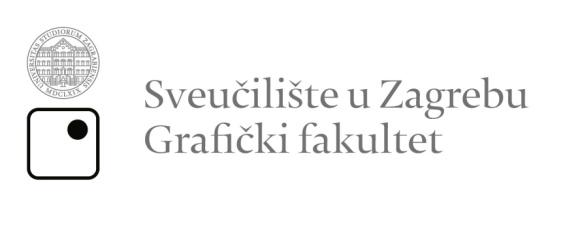
ANALIZA PRIJENOSA BOJE KOD VIŠEBOJNIH REPRODUKCIJA S UV-SUŠEĆIM I KONVENCIONALNIM TISKARSKIM BOJAMA
DIPLOMSKI RAD
Mentor:
Izv. prof. dr. sc. Irena Bates
Student:
Sara Iva Merlić
Zagreb, 2026.
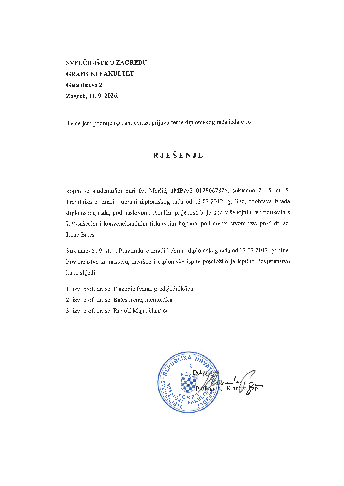
Rad je sufinancirala Europska unija iz Europskog fonda za regionalni razvoj u sklopu projekta "Strateško partnerstvo za istraživanje i razvoj pametnih proizvoda i usluga za povećanje učinkovitosti proizvodnje, rada i korištenja resursa upotrebom naprednih digitalnih tehnologija – GrafIT.
Sažetak
Razvoj UV sušećih tiskarskih boja omogućio je brži i tehnološki napredniji tisak na različitim vrstama podloga, no niži troškovi proizvodnje zadržali su značajnu primjenu konvencionalnih tiskarskih boja u tiskarskoj industriji. Kako bi se dokazala potencijalno bolja kvaliteta konvencionalnih otisaka potrebno je usporediti reprodukcijske mogućnosti UV i konvencionalnih boja. U ovom radu istražit će se primanje boje na boju kod višebojnih reprodukcija s UV-sušećim i konvencionalnim tiskarskim bojama. Analiza će obuhvatiti UV otiske s jednom pokrivnom bijelom bojom, kao i konvencionalne otiske izrađene bojama triju različitih proizvođača. Cilj rada bio je utvrditi postoji li razlika u kvaliteti primanja boje na boju između konvencionalnih boja, kod kojih se prijenos boje odvija prema principu mokro na mokro, i UV-sušećih boja, kod kojih se prijenos boje ostvaruje prema principu mokro na suho. Eksperimentalni dio rada uključivat će analizu UV i konvencionalnih otisaka pomoću mjernih i slikovnih metoda. Za mjerenje optičke gustoće, odnosno prijenosa boje na prethodnu boju koristit će se prijenosni spektrodenzitometar. Kako bi se izvela slikovna analiza površina otisaka snimit će se digitalnim mikroskopom Dino-Lite, pri čemu će se dobivene fotografije obrađivati u programu ImageJ radi procjene pokrivenosti površine s bojom. Dobiveni rezultati statistički će se usporediti kako bi se utvrdile razlike između UV i konvencionalnih sustava tiska te procijenila mogućnost postizanja slične kvalitete reprodukcije konvencionalnim bojama. Dobiveni rezultati potvrđuju da se odgovarajućim odabirom konvencionalnih tiskarskih boja može postići kvaliteta višebojne reprodukcije usporediva s onom ostvarenom primjenom UV-sušećih boja. Analizirani parametri pokazali su da vrsta tiskarske boje utječe na učinkovitost primanja boje na boju i pokrivenost površine, ali UV-sušeće boje nisu u svim slučajevima ostvarile bolje rezultate. Kvaliteta višebojnog otiska ne ovisi isključivo o vrsti tiskarske boje, već i o međusobnoj interakciji svojstava boje, kombinaciji boja i uvjetima tiskarskog procesa. Za digitalnu pripremu i prijelom diplomskog rada koristiti će se web-to-print sustav temeljen na Paged.js tehnologiji, koji omogućuje preciznu kontrolu tipografije i strukture stranica te generiranje tiskarski spremnog PDF dokumenta.
Ključne riječi: prijenos boje, višebojne reprodukcije, UV sušeće boje, konvencionalne boje, web-to-print
Abstract
The development of UV-curable printing inks has enabled faster and more technologically advanced printing on a wide range of substrates. However, the lower production costs of conventional printing inks have ensured their continued widespread use in the printing industry. To determine whether conventional prints can achieve comparable or superior print quality, it is necessary to compare the reproduction capabilities of UV-curable and conventional printing inks. This thesis investigates ink trapping in multicolour reproductions printed with UV-curable and conventional printing inks. The analysis includes UV prints produced with a single opaque white ink and conventional prints produced using inks from three different manufacturers. The aim of this study was to determine whether there is a difference in ink trapping quality between conventional inks, where ink transfer occurs according to the wet-on-wet principle, and UV-curable inks, where it follows the wet-on-dry principle. The experimental part includes the analysis of UV and conventional prints using instrumental and image-based methods. Optical density and ink trapping to the previously printed ink layer will be measured using a portable spectrodensitometer. For image analysis, printed surfaces will be captured with a Dino-Lite digital microscope and processed using ImageJ software to evaluate ink coverage. The results will be statistically compared to determine differences between UV and conventional printing systems and assess whether conventional inks can achieve comparable reproduction quality. The obtained results confirm that, with an appropriate selection of conventional printing inks, multicolour reproduction quality comparable to that achieved with UV-curable inks can be obtained. The analyzed parameters showed that ink type affects ink trapping efficiency and surface coverage; however, UV-curable inks did not achieve better results in all cases. Multicolour reproduction quality depends not only on ink type, but also on the interaction between ink properties, ink combinations, and printing process conditions. The digital preparation and page layout of this thesis will be created using a web-to-print system based on Paged.js technology, enabling precise control of typography and page structure while generating a print-ready PDF document.
Keywords: trapping, multicolor reproductions, UV inks, conventional inks, web-to-print
1. Uvod
Zbog različitih mehanizama sušenja konvencionalnih i UV-sušećih tiskarskih boja opravdano je očekivati razlike u učinkovitosti primanja boje na boju te u kvaliteti višebojne reprodukcije. Konvencionalne tiskarske boje dugi su niz godina imale vodeću ulogu u tiskarskoj industriji, a njihov se sastav kontinuirano prilagođavao zahtjevima tiskarskih procesa i kvalitete reprodukcije. Razvojem tehnologije pojavile su se UV-sušeće tiskarske boje, koje omogućuju brzo očvršćivanje otiska i primjenu na različitim tiskovnim podlogama. Obje skupine tiskarskih boja imaju određene prednosti i ograničenja. Konvencionalne boje odlikuju se širokom primjenom i dostupnošću, dok UV-sušeće boje omogućuju brzo očvršćivanje i neposrednu daljnju obradu otiska [1]. S druge strane, konvencionalne boje ovise o uvjetima i vremenu sušenja, dok primjena UV-sušećih boja zahtijeva odgovarajuću opremu [1]. Unatoč razlikama, obje se skupine i danas primjenjuju u tiskarskoj industriji, a njihov izbor ovisi o vrsti tiskarske tehnike, tiskovnoj podlozi, zahtijevanoj kvaliteti otiska i ekonomskim čimbenicima.
Višebojni tisak temelji se na subtraktivnom miješanju procesnih boja, odnosno međusobnim preklapanjem prozirnih filmova tiskarke boje koji djeluju poput filtra što omogućuje reprodukcija širokog raspona boja i tonova [1]. Kvaliteta konačnog otiska ovisi o nizu čimbenika, među kojima su svojstva tiskarske boje, tiskovne podloge i samog tiskarskog procesa. Posebnu važnost ima pravilno prihvaćanje uzastopno nanesenih slojeva tiskarske boje. Učinkovitost prihvaćanja boje na prethodno otisnuti sloj, odnosno eng. ink trapping, utječe na reprodukciju sekundarnih i tercijarnih boja, zasićenost tonova i ukupnu kvalitetu otiska [1].
Cilj rada bio je utvrditi postoji li razlika u kvaliteti primanja boje na boju između konvencionalnih boja, kod kojih se prijenos boje odvija prema principu mokro na mokro, i UV-sušećih boja, kod kojih se prijenos boje ostvaruje prema principu mokro na suho. Na temelju postavljenog cilja istraživanja definirane su četiri istraživačke hipoteze. Prva hipoteza (H1) pretpostavlja da je konvencionalnim tiskarskim bojama moguće postići sličnu ili jednaku kvalitetu višebojne reprodukcije kao primjenom UV-sušećih tiskarskih boja. Druga hipoteza (H2) pretpostavlja da svi otisci dobiveni konvencionalnim tiskarskim bojama omogućuju jednaki prijenos boje na boju. Također se trećom hipotezom (H3) pretpostavlja da je kvalitativni parametar primanja boje na boju u korelaciji s pokrivenosti površine bojom. Posljednja hipoteza (H4) polazi od pretpostavke da otisci nastali primjenom UV-sušećih tiskarskih boja ostvaruju bolju pokrivenost površine bojom.
Eksperimentalni dio obuhvat će analizu probnih otisaka izrađenih UV sušećim i konvencionalnim tiskarskim bojama. U istraživanju analizirat će se otisci koji sadrže jednu pokrivnu bijelu boju s UV-sušećim bojama te s konvencionalnim bojama triju različitih proizvođača. Kvaliteta reprodukcije analizirat će se pomoću prijenosnog spektrodenzitometra Techkon SpectroDens kojim će se mjeriti integralna optička gustoća boja i primanje boje na boju. Uz mjernu analizu otiska izvest će se i slikovna analiza površina otiska. Otisak će se snimati digitalnim mikroskopom Dino-Lite, a dobivene fotografije analizirat će se u programu ImageJ kako bi se dobila informacija o pokrivenosti površine s bojom. Dobiveni rezultati statistički će se obraditi, usporediti i interpretirati. Na temelju rezultata donijet će se zaključak o mogućnosti postizanja usporedive kvalitete reprodukcije konvencionalnim bojama u odnosu na UV-sušeće boje.
2. Teorijski dio
2.1 Konvencionalne boje
2.1.1 Sastav
Razvoj konvencionalnih tiskarskih boja pratio je rastuće potrebe tiskarske industrije za postizanjem sve kvalitetnijih i tehnološki zahtjevnijih reprodukcija. Pojava prvih specijaliziranih proizvođača tiskarskih boja u 16. stoljeću označila je početak njihova sustavnijeg razvoja, nakon čega su konvencionalne tiskarske boje dugi niz godina imale dominantnu ulogu u tiskarskoj industriji. Njihov se sastav tijekom vremena kontinuirano prilagođavao razvoju tehnologije tiska, zahtjevima kvalitete te ekološkim zahtjevima proizvodnje. Konvencionalne tiskarske boje su sustavi sitnih čestica pigmenata raspršenih u vezivu koje se mogu vezati za tiskovnu podlogu, a namijenjene su korištenju u konvencionalnim tehnikama tiska, poput dubokog, visokog, plošnog tiska te sitotiska. Njihova se svojstva i udio pojedinačnih komponenti znatno razlikuju ovisno o tehnici i brzini tiska, vrsti tiskovne forme, načinu nanošenja boje na tiskovnu formu, debljini nanosa na otisku, fizikalnim i kemijskim svojstvima tiskovne podloge, brzini sušenja te drugim čimbenicima. Međutim, mehanizam prijenosa tiskarske boje i vrsta sušenja najčešće određuju njenu strukturu. Ovisno o vrsti tiska, tiskarke boje se također znatno razlikuju u njihovoj konzistenciji koja se kreće od izuzetno rijetke (vodenaste), do vrlo viskozne (pastozne) [1]. Svaka komponenta tiskarske boje ima određenu funkciju u procesu tiska i omogućuje formiranje kvalitetnog otiska. Tiskarske boje se uglavnom sastoje od više međusobno usklađenih komponenti, pigmenta i/ili bojila, veziva, otapala i različitih aditiva [1] (Slika 1.).
Temeljna komponenta svake tiskarske boje su koloranti, pigmenti ili bojila koji tiskarskoj boji daju njeno obojenje. Pigmenti su organske ili anorganske krute tvari koje su netopive u vezivu. Zato što se pigmenti ne tope u vezivu njihovo osnovno svojstvo nakon boje je, disperzitet. Što su čestice pigmenta manje disperzitet je veći. Obično, pigmenti imaju veličinu čestica od 0,1–2 µm [1]. Pigmenti se sastoje od molekula koje su međusobno umrežene kao kristali, te jedna čestica pigmenta može se sastojati od nekoliko milijuna molekula. Samo oko 10% molekula leži na površini i samo te molekule i nekoliko ispod mogu apsorbirati i reflektirati svjetlost [1]. Bojila su organski spojevi u molekularnom obliku te se otapaju u vezivu. Za razliku od pigmenata molekule bojila otopljene su u vezivu i u potpunosti okružene otapalima tako da gotovo svaka molekula može apsorbirati fotone, što dovodi do većeg intenziteta boje [1]. Bojila imaju veći raspon boja. Pigmenti kao osnovni materijali su obično jeftiniji od bojila, ali zahtijevaju veće troškove prilikom prerade u tiskarsku boju jer se pigmentima moraju dodati disperzivna sredstva kako se ne bi aglomerirali. Bojila su, nasuprot tome, otopljena i ne talože se u tekućini [1]. Tiskarske boje obično sadrže pigmente. Sadržaj pigmenta, ovisno o tonu boje, je između 5% i približno 30% [1]. Primarna funkcija pigmenta je tiskarskoj boji dati njeno obojenje i odgovarajuća optička svojstva. Svojstva pigmenta pritom izravno utječu na svojstva i kvalitetu tiskarske boje. Među osnovna svojstva pigmenata ubrajaju se veličina čestica, odnosno disperzitet, pokritnost, izdašnost (intezitet), svjetlostalnost odnosno postojanost prema svjetlu te tekstura. Navedena svojstva pigmenta direktno utječu na važna svojstva boja poput opaciteta (transparentnost), svjetlostalnost, te otpornosti na kemijske i mehaničke utjecaje. Kod višebojnog (CMYK) tiska opacitet je izrazito bitan jer boje moraju biti dovoljno transparente kako bi se postiglo optičko miješanje boja i kvalitetna višebojna reprodukcija. Međutim, kod tiska na obojene tiskovne podloge poželjno je prvo otisnuti boju velikog opaciteta poput bijele kako bi na nju mogle otisnuti ostale boje.
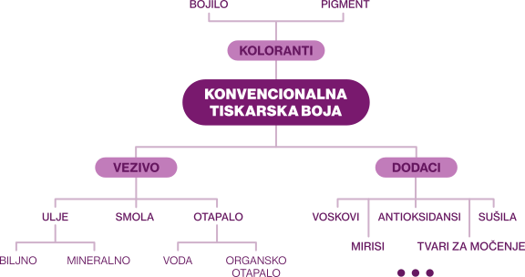
Vezivo je tekuća komponenta tiskarske boje u kojoj su raspršene čestice pigmenta. Također daju boji plastičnost, viskozitet te omogućuju vezanje pigmentnih čestica na tiskovne podloge. Čestice pigmenta su obavijene ovojnicom veziva koja štiti fino dispergirane čestice od udruživanja u aglomerate i taloženja [1]. Vezivo po sastavu mogu biti viskozne tekuće tvari poput različitih ulja, otopine dobivena otapanjem krute smole u ulju, otopine dobivena otapanjem krute smole u organskom otapalu te vodena emulzija dobivena emulgiranjem krute smole s vodom. Međutim, u konvencionalnim postupcima tiska, veziva su obično smole otopljene u mineralnom ulju [1]. Ulja mogu biti različitog podrijetla, a dijele se na sušiva, polusušiva i nesušiva ulja. Sušiva i polusušiva ulja očvršćuju procesom apsorpcije kisika iz zraka, pri čemu se kisik veže na nezasićene dvostruke kovalentne veze između ugljikovih atoma u molekulama ulja. Ovim procesom zvanim oksipolimerizacija dolazi do međusobnog povezivanja molekula i stvaranja makromolekularne strukture, odnosno suhog i elastičnog filma na površini otiska. Nesušiva ulja se ne suše, već ih upija tiskovna podloga. Mineralna ulja su nesušiva ulja. Ulja otapaju smole i tekuća su komponenta veziva. Smole u sastavu tiskarskih boja postižu kvalitetnije otiskivanje, ubrzavaju proces sušenja, čine boje čvršćima, fleksibilnijima i sjajnijima, povećavaju adheziju boja na tiskovnoj podlozi te čine boje postojanije na kemijske i mehaničke čimbenike. Smole mogu biti prirodnog ili sintetskog podrijetla. Otapala, predstavljaju tekuće organske tvari koje imaju sposobnost otapanja smola prisutnih u tiskarskim bojama. Njihova je osnovna uloga održavanje smola u stabilnoj otopini tijekom proizvodnje, skladištenja i primjene tiskarske boje, čime se sprječava njihovo izdvajanje i taloženje. Nakon nanošenja boje na tiskovnu podlogu, otapala u pravilu trebaju ispariti u što kraćem vremenu kako bi se omogućilo stvaranje stabilnog suhog filma. Odabir odgovarajućeg veziva u formulaciji tiskarske boje može biti važniji od odabira pigmenta. Iako se isti pigmenti mogu primjenjivati u tiskarskim bojama namijenjenima različitim tehnikama tiska, veziva moraju biti prilagođen specifičnim zahtjevima tiskarskog procesa. Veziva se suše (stvrdnjavaju) na podlozi i time vežu pigmente [1]. Aditivi se dodaju tinti posebno kako bi utjecali na sušenje, ponašanje tečenja i otpornost na habanje. Vrsta aditiva ovisi o odgovarajućem postupku tiska [1]. Najčešći dodaci tiskarskim bojama su voskovi, ulja i masti, antioksidansi, sušila, tvari za močenje, tvari protiv sljepljivanja otisaka te mirisi.
2.1.2 Sušenje
Proces sušenja tiskarskih boja ima važnu ulogu u postizanju kvalitetnog i stabilnog otiska, a pritom je praćen brojnim kemijskim i fizikalnim procesima koji prvenstveno ovise o svojstvima veziva. Na konačna svojstva otiska značajno utječu način i brzina sušenja. Pojam sušenje uključuje sve procese koji se odvijaju nakon prijenosa tiskarske boje s gumene navlake ili tiskovne ploče na podlogu, čime se osigurava stabilna veza između podloge i tiskarske boje. Tiskarska boja se tijekom ovog procesa stvrdnjava, stvarajući preduvjet za pouzdanu završnu obradu tiska i kasniju upotrebu tiskanih proizvoda [1]. Ovisno o vrsti veziva i mehanizmu sušenja, kod konvencionalnih tiskarskih boja razlikuju se oksidativno sušenje, odnosno oksipolimerizacija veziva, sušenje prodiranjem ili upijanjem veziva u tiskovnu podlogu, sušenje hlapljenjem odnosno isparavanjem otapala. Oksipolimerizacija je kemijska reakcija, dok su sušenje upijanjem u podlogu i isparavanjem fizikalni procesi. Važno je da formulacija tiskarske boje omogućuje njezinu stabilnost tijekom tiska, odnosno sprječava prerano sušenje na valjcima tijekom rada i kraćih mirovanja, dok istodobno omogućuje brzo očvršćivanje i dobro prianjanje boje na tiskovnu podlogu nakon otiskivanja
Sušenje prodiranjem (penetracijom) veziva u tiskovnu podlogu je fizikalni proces u kojem se tiskarska boja absorbira u površinu upojne tiskovne podloge, najčešće papira ili kartona i djelomično prodire u njegovu strukturu. Ovaj način sušenja za razliku od drugih mehanizama ne uključuje kemijsku promjenu veziva. Kada se tiskarske boja prenese na papir njene komponente počinju prodirati u površinu i upijaju se u papir pomoću kapilarnih cijevi papira. Zato poroznost papira, odnosno broj pora po površini i njihov prosječni promjer značajno utječe na brzinu upijanja tiskarske boje u podlogu, a time i brzinu sušenja. Penetracija tiskarske boje se poboljšava manjim veličinama pora supstrata [1]. Osim poroznosti tiskovne podloge, brzina sušenja ovisi i o tečljivosti tiskarske boje te močenju vlakanaca tiskarskom bojom. Penetracija ovisi prije svega o viskoznosti veziva i kapacitetu upijanja podloge [1]. Zato prevelika sposobnost upijanja tiskovne podloge može prouzročiti prebrzo prodiranje veziva u podlogu što rezultira zaostalim pigmentom na površini. Tiskarska boja tada gubi sjaj i otpornost na habanje, a pigmenti se mogu lako obrisati. Zato su papiri s visokom gustoćom malih pora, obično optimalna supstrat za kvalitetne rezultate tiska i sušenje (npr. umjetnički papir) [1]. Međutim, ako vezivo presporo prodire, boja se suši predugo što također nije pogodna za tisak.
Sljedeći fizikalni proces kojim se mogu sušiti konvencionalne tiskarske boje je sušenje hlapljenjem otapala, odnosno isparavanjem. Sušenje hlapljenjem karakteristično je za tiskarske boje čije se vezivo dobiva otapanjem smola ili sličnih tvari u odgovarajućem hlapljivom organskom otapalu. Tijekom sušenja tekuće otapalo se pretvara u parno stanje te se nastala para odnosno zrak opterećen parama otapala odvodi iz sušionika. U pravilu, potrebno je dovoditi samo onu količinu topline koja se utroši na isparavanje nastale pare, neovisno o načinu dovoda topline, uzimajući pritom u obzir ekonomsku učinkovitost procesa i pažljivo postupanje sa sušivim proizvodom. Ovo je pravilo osobito važno pri projektiranju sušila za tiskarske strojeve, budući da se podloga treba zagrijavati što je manje moguće zbog poznatih poteškoća, kao što su netočnost registra, promjene elastičnih svojstava podloge te njezino deformiranje [1]. Glavni parametri koji određuju brzinu sušenja hlapljenjem su temperatura površine, brzina strujanja zraka uz površinu tiskovne podloge te razlika parcijalnih tlakova. Što znači da je za postizanje optimalne brzine sušenja vrući zrak potrebno kombinirati s učinkovitim strujanjem zraka.
Oksipolimerizacija je kemijska reakcija između sušivih ili polusušivih ulja koja se nalaze u vezivu tiskarske boje i kisika iz zraka. Ulje apsorbira kisik te se polimerizira u čvrsti film na površini otiska. Ovaj način sušenja je karakterističan za tiskarske boje koje u svom sastavu sadrže sušiva ili polusušiva ulja, što mogu biti ofsetne boje ili boje za visoki tisak na neupojnim podlogama. Film tiskarske boje oksipolimerizacijom dobiva odgovarajuće umrežavanje i konzistenciju protiv trljanja i abrazije, ali pritom mora zadržati dovoljnu elastičnost potrebnu za daljnju uporabu i funkcionalnost otisnutog proizvoda [1]. Kako bi proces okispolimerizacije bio uspješan potrebno je osigurati dovoljnu količinu kisika za sloj tiskarske boje na arku u izlaznom slogu. Za tu svrhu se najčešće koriste prahovi. Oni povećavaju prostor između listova papira kako bi do otiska stigla dovoljna količina kisika, ali i za sprječavanje razmazivanja slike na donjoj strani gornjeg lista. Tiskarske boje koje se suše okisplomirezacijom često sadrže određenu količinu sušila (sikativa) koji ubrzavaju proces sušenja. Kobalt ili mangan u kombinaciji s kiselinama topljivim u ulju, koriste se kao katalizatori sušenja [1]. Ipak, dodavanje previše aditiva može uzrokovati sušenje tinte na valjcima bojanika tijekom tiska. Unatoč katalizatorima sušenja, sušenje oksipolimerizacijom traje prilično dugo.
Proces sušenja konvencionalnih tiskarskih boja ovisi o nizu čimbenika koji određuju brzinu odvijanja pojedinih mehanizama sušenja i konačna svojstva osušenog filma boje. Na proces pritom utječu sastav boje, osobito na korišteno vezovi u aditive, karakteristična svojstva materijala na koji se tiska (penetracijska sposobnost itd.), uvjeti tiska (količina nanosa boje, brzina tiska), klimatski uvjeti (vlažnost, sobna temperatura), te konstrukcija sušilice (struja zraka na površini boje, razdoblje reakcije) [1]. Međutim, temperatura je odlučujući čimbenik, više temperature ubrzavaju brzinu polimerizacije, smanjuju viskoznost boje kako bi se poboljšalo prodiranje boje te ubrzavaju isparavanje otapala.
2.1.3 Prednosti i nedostaci
Konvencionalne tiskarske boje prisutne su na tržištu već dugi niz godina, a prije razvoja i primjene UV-sušećih boja predstavljale su dominantno rješenje u tiskarskoj industriji. Dugogodišnjim razvojem i usavršavanjem njihove formulacije postignuta su brojna poželjna svojstva, zbog čega su i danas široko zastupljene u tiskarskoj proizvodnji. Iako njihova cijena može varirati ovisno o formulaciji, tehnici tiska i zahtijevanim svojstvima boje, konvencionalne tiskarske boje u pravilu su cjenovno povoljnije u usporedbi s UV-sušećim bojama. Pravilnom formulacijom, usklađenošću s tiskovnom podlogom i tiskarskim strojem te odgovarajućim načinom sušenja omogućuju kvalitetan prijenos boje, dobru reprodukciju tonova i zadovoljavajuća svojstva konačnog otiska. Smole kao jedna od važnih komponenti tiskarskih boja pridonose kvaliteti otiskivanja, fleksibilnosti, sjaju i čvrstoći bojenog filma, poboljšavaju adheziju boje na tiskovnu podlogu te povećavaju njezinu otpornost na kemijske i mehaničke utjecaje. Zbog svoje svestranosti i primjene u različitim tehnikama tiska, konvencionalne tiskarske boje mogu se koristiti na širokom rasponu tiskovnih podloga, od upojnih materijala poput papira i kartona do neupojnih podloga poput plastike te različitih filmova i folija, ovisno o formulaciji boje i zahtjevima tiskarskog procesa. Dodatna prednost konvencionalnih tiskarskih boja je njihova dugogodišnja primjena i razvijena tehnologija proizvodnje, zbog čega postoji širok raspon formulacija prilagođenih različitim tiskarskim procesima i zahtjevima.
Međutim, unatoč brojnim prednostima, konvencionalne tiskarske boje imaju i određena ograničenja. Jedno od njih odnosi se na potrebu za uspješnim procesom sušenja, pri čemu konačna svojstva otiska ovise o uvjetima i vremenu potrebnom za njegovo sušenje. Sušenje konvencionalnih boja je puno sporije u usporedbi s UV-sušećim bojama. Konvencionalne boje, ovisno o formulaciji mogu se sušiti do nekoliko sati dok se UV-sušeće očvršćuju gotovo trenutno pod utjecajem UV zračenja. Sušenje konvencionalnih tiskarskih boja osjetljivo je na uvjete okoliša, pri čemu promjene temperature, relativne vlažnosti zraka i dostupnosti kisika mogu značajno utjecati na brzinu i učinkovitost procesa sušenja. Nekvalitetno sušenje može značajno utjecati na konačna svojstva otiska. Iako je tisak na neupojne podloge moguć, neodgovarajuća formulacija boje i neusklađenost s tiskarskim strojem mogu ograničiti ostvarivanje optimalnih svojstava otiska u usporedbi sa specijaliziranim sustavima boja namijenjenima takvim podlogama. Konvencionalne tiskarske boje na bazi otapala sadrže hlapljive organske spojeve (HOS) koji ispravnijem tijekom tiskarskog procesa mogu negativno utjecati na okoliš, uključujući tlo i vodu u slučaju nepravilnog zbrinjavanja. U prisutnosti sunčeve svjetlosti i dušikovih oksida hlapljivi spojevi mogu sudjelovati u fotokemijskim reakcijama te pridonijeti nastanku prizemnog ozona i drugih onečišćujućih tvari [2]. Štetne emisije hlapljivih organskih spojeva mogu se smanjiti primjenom tiskarskih boja na bazi vode.
2.2 UV boje
2.2.1 Sastav
UV-sušeće tiskarske boje pripadaju posebnoj skupini tiskarskih boja čije se sušenje temelji na djelovanju različitih elektromagnetskih zračenja. Boje ostaju u tekućem stanju do trenutka izlaganja ultraljubičastom (UV) zračenju odgovarajuće valne duljine (približno 100–380 nm), pri čemu dolazi do vrlo brze lančane reakcije koja dovodi do trenutnog sušenja boje. Kemijska reakcija do koje dolazi naziva se fotopolimerizacija i ona razlikuje UV-sušeće boje od ostalih konvencionalnih boja koje se suše oksidacijom i penetracijom u podlogu. U posljednjih nekoliko godina, UV-sušeće boje pojavile su se kao ekološki prihvatljivo i obećavajuće rješenje za nekoliko područja, uključujući grafičku industriju, kodiranje, proizvodnju, robotiku, dekorativne premaze, elektroniku, inženjerstvo, proizvodnju lijekova itd. [3].
Mehanizam sušenja UV-sušećih boja određuje njihov specifičan sastav, zbog čega se one po strukturi i svojstvima značajno razlikuju od konvencionalnih tiskarskih boja. Sastavljene su od pigmenata, oligomera ili prepolimera, monomera, fotoinicijatora i različitih dodataka (aditiva). Tipičan sastav UV-sušećih boja može se generalizirati kroz udjele pojedinih komponenti, pri čemu pigmenti čine 15-20%, prepolimeri 20-35%, monomeri 10-25%, fotoinicijatori 5-10%, te aditivi 1-5% [4]. UV-sušeće boje svom sastavu ne sadrže hlapljiva organska otapala [1]. Time se tijekom procesa sušenja značajno smanjuje emisija hlapljivih organskih spojeva (HOS). Pigmenti su sastavni dio tiskarske boje koji joj daju obojenje i jedina su oku vidljiva tvar pri tisku. Pigmenti su u vezivu raspršeni u finom usitnjenju sve do nanometarskih čestica. Što su čestice pigmenata manje to je intenzitet obojenja veći. U sastavu UV-sušećih pigmenti obavljaju istu funkciju obojenja kao i oni koji se koriste kod konvencionalnih boja na bazi otapala. U formulacijama UV-sušećih boja mogu se koristiti gotovo sve vrste pigmenata, no potreban je određeni oprez pri odabiru istih. Akrilatne grupe koje se nalaze u oligomerima nemaju posebno dobra svojstva vlaženja pigmenata. Iz tog razloga, neki pigmenti koji bi kemijski odgovarali konvencionalnim tiskarskim bojama nisu prikladni za UV formulacije. Određeni pigmenti u UV-sušećim bojama skloni su pokretanju „tamnih“ (eng. dark) reakcija polimerizacije tijekom skladištenja. Takve pigmente treba izbjegavati ili u formulaciju treba uključiti odgovarajući stabilizator [4]. Također, neki pigmenti sprječavaju stvrdnjavanje UV-sušećih boja. To može biti rezultat kemijske reakcije s inicijacijskim sustavom ili se može pojaviti zato što pigment ima značajnu UV neprozirnost u kritičnim područjima, zbog čega formulacija crnih tinti zahtijeva posebnu pozornost [4]. Dok pigmenti ostaju slični onima koji se koriste u konvencionalnim tiskarskim bojama, ostali dijelovi formulacije značajno se kemijski razlikuju, iako ispunjavaju slične uloge [4].
UV-sušećim sustavima češće se koriste reaktivni razrjeđivači koji sadrže akrilatne skupine te sudjeluju u kemijskoj reakciji i povezuju se s ostatkom smole tijekom stvrdnjavanja [4]. Na taj način nastaje film koji sadrži gotovo 100 % krutih tvari, bez isparavanja otapala. Takvi reaktivni razrjeđivači mogu imati različit broj akrilatnih skupina i različitu strukturu, ali se obično razlikuju od smola po tome što su manje i jednostavnije molekule, pa ih se često naziva monomerima [4]. Kod konvencionalnih tiskarskih boja, otapala otapaju smolu, odnosno zadržavaju smolu tiskarskih boja u stabilnoj otopini. Kod UV-sušećih boja tu funkciju imaju monomeri. Monomeri su tekuće tvari niske viskoznosti te se koriste za podešavanje viskoznosti tiskarske boje [1]. To su razrjeđivači, često zvani i reaktivna otapala koji se koriste za razrjeđivanje oligomera na razinu viskoznosti prikladne za potrebnu metodu tiska. Osim toga, mogu služiti za otapanje krutog prepolimera, doprinose vlaženju pigmenta, utječu na adheziju na podlogu, kao i na konačna svojstva očvrsnute boje, uključujući tvrdoću i fleksibilnost površinskog sloja. Reološke karakteristike UV-sušećih boja moraju biti usklađene s reološkim svojstvima konvencionalnih tiskarskih boje tiskarske tehnike u kojoj se primjenjuju. U skladu s tim, viskoznost boje, odnosno udio monomera u formulaciji će varira ovisno o tehnici tiska. U praksi je broj monomera koji su prihvatljivi za upotrebu u tiskarskoj industriji relativno malen. Mnogi dobri akrilati za smanjenje viskoznosti eliminiraju se zato što su toksični, ali miris i hlapljivost također mogu utjecati na tu odluku [4].
U formulacije UV-sušećih boja monomerima se dodaju prepolimeri (oligomeri) koji zajedno tvore vezivni sustav boje. Tijekom izlaganja UV zračenju, prepolimeri reagiraju s monomerima, te stvaraju trodimenzionalnu umreženu polimernu strukturu. UV-sušeće boje, poput konvencionalnih boja također sadrže polimerne smole koje predstavljaju osnovu formulacije i osiguravaju dobro prianjanje na podlogu. Međutim, polimerne smole su u ovom slučaju različite od onih koje se koriste kod konvencionalnih boja na bazi otapala. One su u obliku viskoznih oligomera koji sadrže reaktivne akrilatne grupe i poznati su pod imenom „reaktivne smole“ [1]. Smole značajno utječu na svojstva boje, poput adhezije, otpornosti i fleksibilnosti. Obično se dobivaju iz konvencionalnih sintetičkih smola, primjerice uretana, epoksida i poliestera, u kojima su zaostale hidroksilne skupine reagirale s akrilnom kiselinom kako bi se dobili produkti s reaktivnom etilenskom nezasićenošću [4]. Za formulaciju UV-sušećih boja najčešće se koriste oligomeri poput epoksi-akrilata, poliester-akrilata i uretan-akrilata. Epoksi-akrilat je jeftin te se brzo stvrdnjava, poliester-akrilat ima nisku viskoznost i svojstvo dobrog vlaženje pigmenata, dok uretan-akrilat ima dobru žilavost i kemijska otpornost [4].
Kako bi proces fotopolimerizacije započeo, sastojci UV-sušećih boja zvani fotoinicijatori moraju biti izloženi UV svijetlu kako bi došlo do promjene njihovih kemijsko strukturalnih veza. Fotoinicijatori u tom trenutku reagiraju na fotone UV svijetla, razgrađuju se na slobodne radikale i pokreću kemijsku reakciju polimerizacije. Radikali stvaraju daljnje radikale u lančanoj reakciji i reagiraju s monomerima i prepolimerima stvarajući umreženu strukturu [1]. Zato su fotoincijatori ključni čimbenik u procesu sušenja UV boja. Različite vrste fotoinicijatora reagiraju na različite valne dužine ultraljubičastog zračenja. Iz tog razloga, u formulaciji tiskarskih boja često se kombiniraju različite vrste fotoinicijatora kako bi se osiguralo učinkovito i potpuno očvršćivanje boje te postigla odgovarajuća svojstva konačnog filma. Fotoinicijatori su jedan od uzroka karakterističnog mirisa UV-sušećih boja. Iako se intenzitet mirisa smanjuje nakon procesa fotopolimerizacije, njegov se ostatak može zadržati u otisku.
Najmanji udio u sastavu UV-sušećih boje imaju aditivi, samo 1-5% ukupne formulacije. Poput konvencionalnih tiskarskih boja na bazi otapala, u sastavu UV-sušećih boja dodaci (aditivi) imaju ulogu poboljšanja pojedinih svojstava boje te sprječavanja ili ublažavanja neželjenih pojava tijekom tiska. Njihova učinkovitost ovisi o dobroj kompatibilnosti s ostalim sastojcima boje.
2.2.2 Sušenje
Sušenje tiskarskih boja predstavlja jednu od najvažnijih faza tiskarskog procesa jer izravno utječe na kvalitetu, trajnost i mogućnost daljnje dorade otiska. Za razliku od konvencionalnih tiskarskih boja koje se suše oksidacijom i upijanjem u podlogu, UV tiskarske boje očvršćuju djelovanjem ultraljubičastog zračenja. Proces sušenja UV-sušećih tiskovnih boja, naziva se fotopolimerizacija. Nastala od riječi foto (eng. photo) izvedeno od grčke riječi „phōs“ za svjetlost i polimerizacija (eng. polymerization) od grčkih riječi „poli“ za mnogo i „meros“ za dio što označava kemijski proces spajanja malih, pojedinačnih molekula (monomera) kako bi se formirale duge, složene lančane molekule (polimeri) koji pokreće svjetlost, odnosno UV zračenje. UV zračenje predstavlja ključni čimbenik procesa očvršćivanja UV boja jer ga fotoinicijatori apsorbiraju te pritom prolaze kemijsku transformaciju, koja učvršćuje film tiskarske boje u djeliću sekunde. Ovisno o mehanizmu polimerizacije, UV stvrdnjavanje može se podijeliti u dvije glavne kategorije koje zahtijevaju različite vrste fotoinicijatora: slobodni radikali nastaju u slučaju UV stvrdnjavanja slobodnim radikalima (Slika 2.), a kationi nastaju tijekom kationskog UV procesa stvrdnjavanja [5]. Proces UV polimerizacije sastoji se od tri osnovne faze: inicijacije, propagacije i terminacije. Faza inicijacije pokreće se svjetlošću, odnosno djelovanjem UV zračenja. Propagacija, koja pretvara tekuće monomere i oligomere u čvrstu polimernu mrežu i terminacija, deaktiviranje većine rastućih radikala ili kationskih lanaca, su toplinske lančane reakcije koje slijede istu kinetiku kao i konvencionalne reakcije polimerizacije [5].
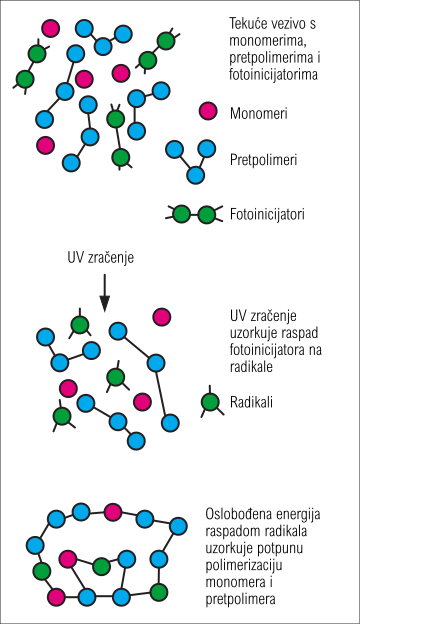
Djelovanjem UV zračenja aktiviraju se fotoinicijatori prisutni u tiskarskoj boji, pri čemu nastaju slobodni radikali koji započinju proces polimerizacije i očvršćivanja tiskarske boje. Ti se radikali potom dodaju dvostrukoj vezi oligomera ili monomera, čime se u procesu inicijacije polimerizacije formira radikal centriran na ugljiku [5]. Fotoinicijator mora biti u mogućnosti apsorbirati UV zračenje koje generira lampa, jer u suprotnom inicijacija fotopolimerizacije ne bi bila moguća, reakcija stvrdnjavanja se ne bi pokrenula, a film tiskarske boje bi ostao tekuć. Temeljni zahtjev inicijacije procesa fotopolimerizacije je da se mogućnost fotoinicijatora da apsorbira UV zračenje mora preklapati s emisijskim spektrom UV lampe. Konvencionalni UV sušionici rade s jednom ili više živinih lampi, ovisno o vrsti i jačini lampe emitirati će različite raspone UV zračenja. Apsorpcija komercijalnih fotoinicijatora obično se proteže u rasponu od UV-C (oko 230 nm) do UV-A (od 380 do 400 nm) zračenja [5]. Emisije zračenja srednjetlačnih živinih UV lampi, koje emitiraju između 220 i 580 nm, prilagođene su apsorpcijskom području fotoinicijatora, omogućujući njihovu optimalnu aktivaciju. Posljednjih godina, LED tehnologija privukla je veliki interes za modernu koncepciju UV lampi zahvaljujući niskoj potrošnji energije, smanjenom emitiranju štetnog UV zračenja jer većina UV/LED lampi radi u području bliskom UV-u i vidljivom spektru, manjem razvijanju topline, dugom radnom vijeku te manjim zahtjevima za održavanjem [3]. Različiti parametri mogu utjecati na inicijacijski proces, povećanje koncentracije fotoinicijatora i visok intenzitet svjetlosti poboljšava brzinu stvrdnjavanja [5].
Faza propagacije, odnosno proces učvršćivanja tiskarske započinje kada se radikali nastali u koraku inicijacije dalje šire mehanizmom slobodnih radikala. Brzina širenja ovisi o brzini inicijacije, kao i o reaktivnosti oligomera, ali viskoznost boje progresivno raste, što usporava kinetiku polimerizacije [5]. Brzina širenja radikala nije pod značajnim utjecajem temperature, odnosno porast temperature obično ne utječe na reaktivnost. Međutim, visoka temperatura povećava pokretljivost polimernih lanaca tijekom procesa stvrdnjavanja, čime se omogućuje brže i potpunije očvršćivanje. Lokalni porast temperature može nastati uslijed intenzivnog UV zračenja, topline koju emitira UV lampa te prirode egzotermne reakcije polimerizacije [5].
Radikali ili prolaze kroz reakciju rekombinacije ili disproporcionacije. Rekombinacija je proces gdje vrlo reaktivni slobodni radikali teže spajanju s drugim slobodnim radikalom, u trenutku spajanja nastaje nova molekula te dolazi do zaustavljanja polimernog lanca odnosno učvršćivanja UV tiskarske boje. Kod disproporcionacije ne dolazi do spajanja slobodnih radikala, već dva radikala međusobno razmijene atom što rezultira gubitkom reaktivnosti i zaustavljanje reakcije. Oba procesa predstavljaju načine terminacije polimerizacije u učvršćivanja UV-sušeće boje. Polimerizacija može prestati i zbog vitrifikacije, odnosno stvaranja izrazito krute i gusto umrežene polimerne mreže. U takvim uvjetima pokretljivost slobodnih radikala i nereagiranih monomera znatno se smanjuje, zbog čega se reakcija prerano zaustavlja, a dio monomera ostaje nepolimeriziran [5].
UV tiskarske boje, u kombinaciji s odgovarajućim UV sustavima za sušenje, mogu se primjenjivati na tiskarskim strojevima za tisak iz arka i iz role. Kod fleksografskog i dubokog tiska sušenje se provodi nakon svake tiskovne jedinice zbog specifičnih reoloških svojstava boje [1]. Međujedinično sušenje, odnosno sušenje između tiskarskih jedinica, može se koristiti za sprječavanje razdvajanja filma tiskarske boje između dviju dodirnih površina (eng. ink splitting) prije odlaska u sljedeću jedinici za bojanje. Vrlo često je potrebno cjelokupno sušenje nakon posljednje jedinice za bojanje, s većom brzinom ispisa [1].
2.2.3 Prednosti i nedostaci
Primjena UV tiskarskih boja posljednjih je godina sve zastupljenija zbog njihovih brojnih tehnoloških prednosti. Međutim, uz prednosti ova tehnologija ima i određene nedostatke koji mogu utjecati na odabir UV boja u pojedinim tiskarskim procesima. Zbog svojih specifičnih svojstava, UV tiskarske boje pružaju niz prednosti koje se mogu podijeliti prema njihovom utjecaju na tiskarski proces, kvalitetu otiska te ekološke i ekonomske aspekte proizvodnje. Jedna od najvećih razlika, ali i prednosti UV boja u odnosu na konvencionalne tiskarke boje je njihova brzina sušenja. UV-sušeće boje se pod utjecajem UV zračenja potpuno učvršćuju u djeliću sekunde, što uvelike poboljšava učinkovitost tiska, posebno za velike naklade. Zbog trenutnog sušenja otisci tiskani UV bojama se mogu rezati, savijati i lakirati odmah nakon sušenja. Također, primjena UV sušilica omogućuje smanjenje prostornih zahtjeva proizvodne linije jer zamjenjuje glomazne peći potrebne za termoreaktivno očvršćivanje [5]. Reološke prednosti kao rezultat sastava UV-sušećih boja uključuju stabilnu viskoznost tijekom tiska za koju nisu potrebna hlapljiva otapala, dobra svojstva prijenosa boje i reprodukcija detalja te manjak oštećenja otisaka zbog lijepljenja i preslikavanje boje. Formulacije su stabilne dulje vrijeme u odsutnosti UV svjetla (obično nekoliko mjeseci ili dulje) i nemaju rok trajanja što smanjuje troškove skladištenja [5]. Nakon sušenja film boje poprima dobra svojstva otpornosti na vremenske uvjete poput sunca i vlage te dobra mehanička (otpornost na habanje, grebanje), što tiskane proizvode čini izdržljivijima. UV-sušeće boje mogu se tiskati na neupijajuće podloge poput metala, folija i plastike [1]. Kvaliteta otisaka ih čini čestim izborom za tisak ambalaže. Nakon brzine sušenja, jedna od najznačajnih prednosti UV-sušećih boja je njihova ekološka prihvatljivost. Tijekom procesa UV očvršćivanja ne dolazi do emisije štetnih plinova, a emisije hlapljivih organskih spojeva (HOS) su zanemarive. Manja potrošnja energije se očituje primjenom UV LED sustava, dok trenutačno očvršćivanje boje smanjuje količinu otpada nastalog zbog oštećenja ili neispravnog sušenja otisaka.
Iako UV tehnologija omogućuje gotovo instantno učvršćivanje UV tiskarskih boja, dolazi sa nekoliko nedostataka koji mogu utjecati na kvalitetu otiska, troškove tiskara i zdravlje radnika. Mogućnost fotoinicijatora da apsorbira UV zračenje mora se preklapati s emisijskim spektrom UV lampe, odnosno ako se mogućnost apsorbacije UV boje ne podudara s UV zračenjem koje generira lampa, učvršćivanje boje se neće pokrenuti, a film tiskarske boje će ostati djelomično ili potpuno tekuć. Zato su procesi UV sušenja izrazito osjetljivi na dovoljnu dozu UV energije, te može doći do pojave nepotpunog očvršćivanja ako UV zračenje nije odgovarajuće. Raspršivanje tiskarske boje (eng. fogging/misting) zbog reoloških svojstava UV boja za ofsetni tisak rezultira ograničenjem brzine ispisa [1]. Iako su UV-sušče boje manje prikladne za upijajuće podloge od neupijaućih, može doći do problema slabe adhezija na nebubreće podloge poput metala ili nekih plastika ako boja i uvjeti očvršćivanja nisu pravilno odabrani. Najčešći uzrok problema s stvrdnjavanjem kod sušenja slobodnim radikalima je skupljanje volumena akrilata tijekom polimerizacije na fleksibilnim površinama, što također utječe na adheziju filma i podloge [5]. Veća kapitalna ulaganja zbog dodatne opreme, te viši troškovi za tiskarske tinte, sredstva za pranje u odnosu na konvencionalne, kao i relativno kratak vijek trajanja UV lampi te prateći troškovi održavanja i zamjene mogu utjecati na više troškove poslovanja [1]. Tijekom rada s UV sustavima potrebno je osigurati odgovarajuću zaštitu radnika od izravnog izlaganja UV zračenju kao i potrebnu zaštitu pri rukovanju i zbrinjavanju živinih UV lampi koje se koriste u procesu sušenja. Zbog stvaranja gusto umrežene polimerne strukture nakon UV očvršćivanja, recikliranje pojedinih UV otisnutih proizvoda može biti otežano.
2.3 Višebojna reprodukcija
Višebojni tisak temelji se na subtraktivnom miješanju boja koji uključuje apsorpciju i refleksiju svjetlosti. To se događa kada se tiskarske boje, koje sadrže pigmente ili bojila, međusobno miješaju i preklapaju te apsorbiraju određene valne duljine svjetlosti, a reflektiraju druge stvarajući nove boje. U subtraktivnom sustavu miješanja boja primarne boje su cijan (C), magenta (M) i žuta (Y), a dodatkom crne (K) nastaje četverobojni sustav tiska poznat kao CMYK. Kombiniranjem ovih procesnih boja moguće je reproducirati širok raspon boja, čime se postiže kvalitetna reprodukcija fotografija i ostalih višebojnih grafičkih elemenata (Slika 3.).
Svaka fotografija, ilustracija ili neki drugi višebojni grafički element se može razdvojiti na tri osnovne procesne boje, cijan (C), magentu (M) i žutu (Y) koje miješanjem čine potpunu i vjernu reprodukcija izvornog motiva. Slojevi tiskarske boje naneseni na podlogu u procesu ispisa moraju biti prozirni, odnosno djelovati poput filtera za boje, kako bi fizički principi suptraktivnog miješanja boja imali učinak [1]. Miješanjem cijan i žute (C+Y), nastaje zelena, miješanjem magente i žute (M+Y) nastaje crvena, miješanjem cijan i magente (C+M) nastaje plava, a miješanjem svih triju boja nastaje crna (C+M+Y). Iako miješanje triju procesnih boja rezultira crnom bojom, ona obično više nalikuje tamno smeđoj ili sivoj. Zato je kao četvrta boja dodana crna (K) koja se koristi kako bi se smanjili tehnološki troškovi ispisa triju kromatskih boja za stvaranje crne, za postizanje dubine, kontrasta i „prave“ (tzv. tonske) crne, te tisak sitnih detalja i teksta. Prilikom reprodukcije višebojnih fotografija ili ilustracija, original se rastavlja na četiri osnovne boje, cijan, magenta, žuta i crna (CMYK), što se naziva separacija boja. Zatim se pojedinačne separacije rastriraju pod različitim kutovima rastera. Nepravilno pozicioniranje separacija boja uzrokuje interferenciju ili takozvane moiré uzorke, što može ozbiljno narušiti dojam i izgled slike [1]. Nakon separacije boja, u procesu izrade ofsetnih ploča izrađuje se zasebna tiskarska ploča za svaku od četiri boje, cijan, magentu, žutu i crnu. Zatim, kada se tiskaju u odgovarajućem redoslijedu i pravilno pozicioniraju jedna u odnosu na drugu, ove četiri ploče mogu točno reproducirati boje i sjenčanje izvorne fotografije ili višebojnog grafičkog elementa. U većini procesa tiska, ilustracije za tisak u boji prvo se moraju podvrgnuti procesu rastriranja kako bi se prikazale tonske gradacije, što se može učiniti u istom koraku kao i separacija boja ili odvojeno [6]. Pravilni registar (ili paser), odnosno precizno preklapanje svakih od slojeva boja je izrazito važan za kvalitetnu reprodukciju boja i tonova. Kada paser (registar) u ofsetnom tisku nije točan, dolazi do niza vizualnih pogrešaka na otisku, poput promjena oštrine i zamućenja slike (eng. blur), promjena nijansi zbog krivog preklapanja rastera te pojava udvostručenih ili višestrukih kontura elemenata slike (eng. doubling). Osim pravilnog registra, separacije boja i rastriranja postoje dodatni čimbenici koji mogu utjecati na kvalitetu višebojne reprodukcije. Svojstva tiskovne podloge, poput glatkoće, upojnosti, optičkih svojstva (bjelina, prozirnost, svjetlina) i premaza određuju način prihvaćanja tiskarske boje te konačnu optičku kvalitetu otiska. Bjelina i nijansa papira ima odlučujući utjecaj na reprodukciju boja u četverobojnom tisku, dok problemi s upojnosti tiskovne podloge mogu uzorkovati pojavu mrljavost i pjegavosti (eng. mottling) otiska [1]. Nedovoljna količina nanesene boje može rezultirati slabijom zasićenošću i manjom optičkom gustoćom koja omogućuje stabilnu reprodukciju tonova i ujednačen izgled otiska, dok prevelika količina može uzrokovati razlijevanje boje, produljeno sušenje i smanjenu kvalitetu reprodukcije. Redoslijed tiska prema normi ISO 12647-2:2013 je cijan, magenta i žuta (CMY), pri čemu se crna boja može tiskati kao prva ili posljednja (KCMY ili CMYK). Međutim, ne postoji jedan točan redoslijed otiskivanje procesnih boja, već se prilagođava različitim potrebama i zahtjevima reprodukcije. Redoslijed se može mijenjati ovisno o ljepljivosti, viskoznosti i prozirnosti boje te izbor pravilnog redoslijeda može utjecati na prijenos boje, stvaranje sekundarnih i tercijarnih boja te ukupnu kvalitetu višebojne reprodukcije. Kvaliteta višebojne reprodukcije ne ovisi isključivo o pravilnoj separaciji boja i paseru otiska, već i o međudjelovanju pojedinih slojeva tiskarske boje tijekom otiskivanja. Jedan od najvažnijih parametara koji opisuje učinkovitost prijenosa boje na prethodno otisnuti sloj jest eng. ink trapping. Učinkovitost primanje boja na boju izravno utječe na reprodukciju sekundarnih i tercijarnih boja, zasićenost tonova te vjernost reprodukcije izvornog motiva.
2.4 Primanje boje na boju
Jedan od ključnih čimbenika koji utječe na kvalitetu višebojnog tiska, osobito ofsetnog je međusobno prianjanje uzastopno nanesenih slojeva tiskarske boje. U slučaju ofsetnog višebojnog tiska, procesne boje (CMYK) nanose se tehnikom mokro na mokro (eng. wet-on-wet) gdje se sljedeća boja nanosi prije nego što se prošla potpuno osušila, tako se njihovim preklapanjem stvora širok raspon boja. Kako bi se definirala uspješnost višebojnog tiska potrebno je procijenit koliko se svježa boja uspješno prenijela na prethodno otisnuti sloj. Učinkovitost prijenosa novog sloja boje na prethodno otisnutu boju naziva se eng. ink trapping i definira se kao sposobnost jednog sloja tiskarske boja da prihvati drugi sloj boje tijekom procesa tiska (Slika 4.) [7]. Pojava primanja boje na boju karakteristična je za višebojni tisak jer se boje nanose jedna preko druge i osim što prva nanesena boja dolazi u izravan dodir s podlogom, ostale dolaze u izravan dodir s prethodnim slojem boje. Kvalitetno prianjane sljedeće tiskane boja ne prethodnu izravno utječe na reprodukciju tonova, optička svojstva otisaka, postizanje željenih kolorističkih vrijednosti i ukupnu kvalitetu otiska. Primanje boje na boju mjeri je u tri područja boja, crvenoj, zelenoj i plavoj.
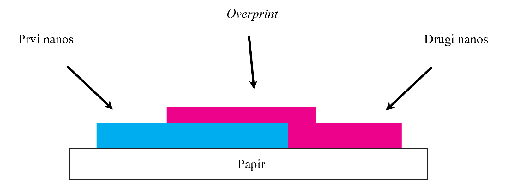
Crvena predstavlja eng. overprint žute na magentu, zelena predstavlja eng. overprint žute na cijan, dok plava predstavlja eng. overprint magente na cijan [8]. Kod ofsetne tehnike tiska sustavi za bojanje, preko nekoliko manjih valjaka nanose tiskarsku boju na valjak koji nosi tiskovnu formu, zatim se boja sa tiskovne forme, prenosi na ofsetni valjak s gumenom navlakom, koji prelaskom preko tiskovne podloge ostavlja otisak. Kako bi se dobio višebojni otisak, svaki od valjaka u sustavu za obojenje nanosi jednu od boja, cijan, magentu, žutu i crnu (CMYK). Kod višebojnog ofseta, prijenos prve tiskarske boje s tiskarske jedinice na podlogu je mokro-na-suho (eng. wet-on-dry). Iz razloga što se mokra tiskarska boja prenosi na suhu tiskovnu podlogu. Sljedeće tiskarske jedinice tiskaju mokro-na-mokro (eng. wet-on-wet) na već otisnuto područje boje koja se nije potpuno osušila [7]. Ključ eng. wet-on-wet tehnike je prijenos novog sloja tinte na već otisnuti mokri sloj, bez njegovog podizanja ili skidanja, što uvelike ovisi o kontroli gustoće i ljepljivosti tiskarske boje. Prijenos tiskarske boje između valjaka odvija se u njihovom kontaktnom području. Pri ulasku boje između valjaka zbog visokog tlaka dolazi do ravnomjernog raspoređivanja tiskarske boje po njihovim površinama. Kako se valjci nastavljaju okretati i odvajati, tlak u filmu boje se naglo smanjuje, što uzrokuje pojavu sitnih šupljina unutar sloja boje. Zbog toga se film boje razdvaja u tanke niti koje se tijekom daljnjeg odvajanja prekidaju. Posljedica ovog procesa je cijepanje sloja boje (eng. ink splitting), pri čemu dio boje ostaje na jednoj, a dio prelazi na drugu površinu. Ovaj mehanizam predstavlja osnovu prijenosa tiskarske boje u ofsetnom tisku te izravno utječe na primanje boje na boju.
Pravilno prianjanje boje na boju ovisi o nekoliko međusobno povezanih čimbenika koji moraju biti pažljivo uravnoteženi kako bi se postigla optimalna kvaliteta tiska. To uključuje ljepljivost tinte, redoslijed ispisa boja, brzinu tiskarskog stroja te fizikalna i kemijska svojstva tiskovne podloge. Svaki od ovih čimbenika može značajno utjecati na interakciju između slojeva tinte tijekom procesa ispisa [8]. Ljepljivost tiskarske boje (eng. tack) je svojstvo tiskarskih boja koje opisuje koheziju koja postoji između čestica filma boje, odnosno njihovu ljepljivost. Također mjeri silu potrebnu za cijepanje filma tinte (eng. ink splitting) između dva rotirajuća valjka pri unaprijed određenoj brzini i temperaturi [1,7]. Ljepljivost je značajan faktor koji omogućuje tiskarskim bojama da se prilijepe ili prime jedna za drugu [7]. U pravilnom redoslijedu, prva tiskarske boja mora imati najveću ljepljivost, dok sljedeće otisnute boje moraju imati nižu ljepljivost [1,7]. U suprotnom, novi nanos tiskarske boje će se zalijepiti za već otisnutu mokru boju podignuti je sa papira i uništiti otisak. Redoslijed tiskanja procesnih boja može se razlikovati ovisno o zahtjevima tiskarskog procesa i kriterijima kvalitete koje je potrebno postići. U višebojnom ofsetnom tisku jedan od najčešće primjenjivanih redoslijeda jest crna (K), cijan (C), magenta (M) i žuta (Y), odnosno KCMY [9]. Prema normi ISO 12647-2:2013 za kontrolu procesa u ofsetnom tisku, preporučeni slijed procesnih boja je cijan, magenta i žuta (CMY), pri čemu se crna boja može tiskati kao prva ili posljednja (KCMY ili CMYK), ovisno o zahtjevima reprodukcije i željenom kontrastu. Međutim, navedeni redoslijedi nisu jedini koji se primjenjuju u praksi. Odabir slijeda tiskanja može se prilagoditi ciljevima procesa, primjerice postizanju šireg gamuta boja, bolje reprodukcije pojedinih tonova ili stabilnijeg prijenosa boje. U pravilu, kako bi se tinta dobro prilijepila na već otisnute tinte, sljedeća tinta mora imati nižu ljepljivost od prethodne [1]. Na uspješnost primanja boje na boju značajno utječu površinska struktura i mehanizmi interakcije tiskarske boje i podloge, za razliko od optičkih karakteristike poput bjeline ili fluorescentnosti. Ključni kontrolni čimbenici povezani su s poroznošću, prisutnošću premaza i sposobnošću podloge da regulira prodiranje tinte i ponašanje sušenja [8]. Dokazano je da podloge s nižom apsorpcijom vode općenito postižu veće vrijednosti primanja, što sugerira da niža poroznost doprinosi poboljšanoj interakciji između slojeva tiskarske boje. Premazane tiskovne podloge, koje pokazuju nižu apsorpciju, dosljedno pokazuju bolje performanse prianjanja boje na boju u usporedbi s nepremazanim materijalima [8].
Kod tiska s bojama visoke gustoće kao što su ofsetne, svaki sljedeći sloj boje koji se tiska preko prethodnog nikada se ne prenese u istoj debljini kao u slučaju kada bi se ta boja tiskala izravno na papir [7]. Zato jer se dio boje ostane na gumenom cilindru, dio se spoji sa prethodno otisnutim slojem, dio se "rascjepi" tijekom odvajanja cilindara (eng. ink splitting). Iz razloga što se debljina prijenosa boje može razlikovati zbog različitih razloga i čimbenika, prianjanje boje na boju se mjeri i prikazuje u postotku. Visok postotak je dobar i prihvatljiv jer označuje željenu boju, dok nizak postotak označuje neujednačenu ili promjenjivu boju. Primanje boje na boju najčešće se određuje spektrodenzitometrom. Riječ je o mjernim uređajima koji omogućuju objektivnu analizu optičkih i kolorimetrijskih svojstava otiska. Vrijednosti optičke gustoće D1, D2 i Dop dobivene spektrodenzitometrijskim mjerenjem koriste se za izračun primanja boje na boju primjenom Preucilove, Ritzove ili Brunnerove jednadžbe, pri čemu se rezultat izražava kao postotak.
Preklapanjem dviju procesnih boja, cijan i žute dobiva se sekundarna zelena boja, magenta i žuta tvore crvenu, a miješanjem magente i cijan dobiva se plava boja. Preklapanje tiskarskih boja kako bi se dobio širok raspon sekundarnih je temelj višebojnog tiska, a učinkovit prijenos svakog sljedećeg sloja boje nužan je za postizanje predviđenih kolorimetrijskih vrijednosti i željenog vizualnog izgleda otiska. Dobro primanje boje na boju omogućuje pravilno preklapanje procesnih boja, čime se postižu odgovarajuća zasićenost, stabilna reprodukcija boje te vjernije stvaranje sekundarnih boja. S druge strane, nedovoljno primanje boje na prethodno otisnuti sloj može uzrokovati odstupanja u optičkoj gustoći i reprodukciji boja. Takve promjene mogu rezultirati promjenom nijanse, smanjenom zasićenošću te nepravilnim formiranjem sekundarnih i tercijarnih boja. Zbog toga se primanje boje na boju smatra jednim od važnih pokazatelja uspješnosti procesa višebojnog ofsetnog tiska te se često koristi u kontroli kvalitete otiska.
2.5 Web tehnologija za pripremu dokumenata za tisak (Paged.js)
Iako se pojam eng. Web-to-print (W2P) najčešće povezuje s modelom e-trgovine koji korisnicima omogućuje prilagodbu, naručivanje i plaćanje tiskanih proizvoda putem interneta, manja grupa predanih programera i dizajnera nazivu eng. Web-to-print pridodaju potpuno drugo značenje. Web-to-print, je po njihovoj definiciji skup web-baziranih tehnologija koje omogućuju ispis sadržaja web stranice na papir, u obliku paginiranih knjiga, brošura i ostalog tiskanog sadržaja [10]. Programske tehnologije koje služe za stvaranje dokumenata u ovom procesu uključuju HTML, CSS te JavaScript. HTML je programski jezik temeljen na oznakama koji definira organizaciju elemenata koji čine dokument (zaglavlje, tijelo, naslovi, odjeljci, podjele itd.). Također se može koristiti za pozivanje drugih datoteka pomoću komplementarnih jezika, kao što su CSS, koji definira grafički stil elemenata stranice (boje, fontovi, prostorna organizacija, animirani efekti prijelaza itd.), i JavaScript, programski jezik koji definira ponašanje same stranice i njezinih elemenata (elementi, stilovi, vanjski resursi) [10]. Kako bi se formirao dokument, koristiti će se HTML jezik za određivanje i organizaciju elemenata, poput naslova, CSS-om se naslovu dodjeljuje font, boja i ostala svojstva, dok se JavaScript koristi za automatsko numeriranje poglavlja, izradu sadržaja, upravljanje prijelomima stranica, generiranje zaglavlja i podnožja te druge funkcije koje olakšavaju pripremu dokumenta za tisak. Rezultat je dokument koji se putem web preglednika prikazuje u obliku web stranice. Kako bi se mogao stvoriti PDF od izrađenog dokumenta te tiskati potrebno je središte ovog eng. Web-to-print procesa, softverska biblioteka, nazvana Paged.js.
Paged.js je besplatna JavaScript biblioteka otvorenog koda koja paginira sadržaj u web- pregledniku kako bi stvorila PDF prikaz iz bilo kojeg HTML sadržaja, što znači da je moguće dizajnirati radove za tisak (npr. knjige) koristeći HTML i CSS [11]. Kako bi razumjeli funkciju Paged.js-a potrebno je predstaviti i objasniti tehnologije koje su bile temelj njegova nastanka. Kako bi prilagodili web stranicu različitim uređajima (zaslon računala, mobitel) na kojima se prikazuje koriste se CSS medijski upiti (eng. media queries) koji omogućuju primjenu stilova na temelju karakteristika uređaja ili okruženja koje prikazuje web stranicu [12]. Ako je zaslon širine 480px koja najčešće odgovara manjim mobitelima, određena skupina elemenata će biti raspoređena vertikalno, a ne horizontalno kao što su na zaslonima računala. Iz tog su razloga CSS medijski upiti ključni su za izradu responzivnih web stranica [12]. Nakon medijskih upita koji definiraju stilove na temelju karakteristika uređaja uvedena je mogućnost definiranja pravila za određene vrste tiskovnih medija. Slika 5 prikazuje shemu procesa web-to-print tehnologije od web-preglednika do izlaznih formata za digitalni prikaz i tisak.
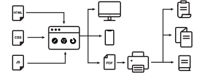
Kako bi se stvorila jasna razlika između stilova namijenjenim zaslonima i onih namijenjenim tisku, uveden je @page, pravilo koje definira ponašanje elemenata na trenutnoj stranici prilikom ispisa, poput veličine papira, margina i orijentacije. Detaljan opis i funkciju pravila @page i njegovih derivata, objavljene su pod nazivom eng. CSS Paged Media Module Level 3. Ovaj CSS modul određuje kako se stranice generiraju i raspoređuju kako bi se zadržao fragmentirani sadržaj u prezentaciji sa stranicama [13]. Modul omogućuje kontrolu svojstava stranice, uključujući margine, veličinu i orijentaciju, kao i definiranje zaglavlja i podnožja. Osim toga, proširuje mogućnosti generiranog sadržaja omogućujući automatsko numeriranje stranica te dinamičko prikazivanje zaglavlja i podnožja [13]. Upravo je eng. CSS Paged Media kao temelj omogućio stvaranje i razvoj softverske biblioteke otvorenog koda Paged.js. Paged.js djeluje kao eng. polyfill za CSS module za ispis sadržaja koristeći značajke koje preglednici još izvorno ne podržavaju [11]. Polyfill je dio koda (najčešće JavaScript na webu) koji se koristi za pružanje moderne funkcionalnosti na starijim web preglednicima koji ga izvorno ne podržavaju. To je način popunjavanja rupa u kodu web preglednika kako bi se uvele nove funkcije poput mogućnosti kontrole svojstava stranice te definiranje zaglavlja i podnožja [14]. Ukratko, softverska biblioteka Paged.js koristi CSS pravila kako bi HTML dokument prikazan kroz web preglednik pravilno paginirala i pripremila za generiranje PDF-a spremnog za tisak.
3. Eksperimentalni dio
3.1 Plan rada i metodologija ispitivanja
Eksperimentalni dio rada obuhvatiti će analizu otisaka izrađenih UV sušećim i konvencionalnim tiskarskim bojama. U istraživanju će se uspoređivat UV otisak s konvencionalnim otiscima izrađeni bojama triju različitih proizvođača tiskarskih boja, označeni će biti sa slovima A, B i C. Analiza će se izvršiti na kontrolnim stripovima s poljima koje sadrže obojenje crveno, zeleno, plavo i smeđe (Slika 6.) koji služe za mjerenje primanje boje na boju kod višebojnih reprodukcija. Kvaliteta reprodukcije analizirat će se pomoću prijenosnog spektrofotometra X-Rite eXact Standard kojim će se mjeriti integralna optička gustoća boja i primanje boje na boju. Uz mjernu analizu otiska izvest će se i slikovna analiza površine otiska. Otisak će se snimati digitalnim mikroskopom Dino-Lite AM4917MZT EDGE PLUS, a dobivene fotografije analizirat će se u programu ImageJ kako bi se dobila informacija o pokrivenosti površine s bojom. Dobiveni rezultati statistički će se obraditi, usporediti i interpretirati. Na temelju rezultata donijet će se zaključak o mogućnosti postizanja usporedive kvalitete reprodukcije konvencionalnim bojama u odnosu na UV-sušeće boje.
3.2 Korišteni materijali
Svi analizirani otisci tiskani su na kartonu TopFold GC2 (PT Riau Paperboard International, Riau, Indonezija). Pri otiskivanju i UV-sušećih boja i konvencionalnih boja koristila se je ofsetna tehnika tiska.
Kako nije moguće na istom tiskarskom stroju tiska UV-sušeće boje i konvencionalne boje, koristila su se dva različita tiskarska stroja. Otisci s UV-sušećim bojama rađeni su s jednim slojem UV pokrivne bijele boje na tiskarskom stroju KBA RA 106 X-7 + L RS (Koenig & Bauer AG, Würzburg, Njemačka). U procesu tiska korištene su FD LED EU S5 UV boje te Flash Dry bijela boja kao osnovni premaz, proizvođača Toyo Ink SDN BHD (Toyo Ink Europe, Oissel, Francuska). Ove UV boje čine seriju niskoenergetskih UV boja za LED/UV ofsetne tiskarske sustave. Ističu se brzo stvrdnjavanjem s minimalnom upotrebom LED/UV energije, visokim sjajem te stabilnim i visokokvalitetni rezultatima tiska. Tiskarske boje ove serije usklađene su sa zahtjevima REACH-a, EuPIA smjernicama i normom ISO 2846-1 koja definira preciznu boju i prozirnost tiskarskih boja koje se koriste u četverobojnom (CMYK) ofsetnom tisku, čime podržava postizanje standarda ISO 12647-2 koji definira parametre i točne vrijednosti za reprodukciju boja i kontrolu procesa u ofsetnom tisku. Također su certificirane od strane INGEDE 11 za dobra svojstva uklanjanja boje pri recikliranju [18].
Uz UV otiske, ispitivani su otisci nastali s konvencionalnim tiskarskim bojama, kod kojih je nanesen jedan sloj pokrivne bijele boje. Pri otiskivanju triju naklada s različitim konvencionalnim bojama korišten je isti tiskarski stroj KBA Rapida 105, s brzinom od 8000 listova na sat. U tablici 1 prikazane su korištene oznake za analizirane otiske, a na Slici 6 kontrolni strip na kojem su rađena mjerenja.
| Vrsta tiskarske boje | Sušenje | Oznaka |
|---|---|---|
| UV-sušeća boja | Monokromatsko UV sušenje | UV |
| I. Konvencionalna boja | Oksidativno sušenje | A |
| II. Konvencionalna boja | Brzo oksidativno sušenje | B |
| III. Konvencionalna boja | Oksidativno sušenje | C |

Prva korištena konvencionalna boja bila je SunTec® V-Foil tiskarska boja od proizvođača Sun Chemical, DIC Group, New Jersey, USA (oznaka A) pripadaju osnovnim bojama za primjenu na filmu i foliji, no nisu namijenjene tisku na osjetljive podloge ili prehrambenu ambalažu. Procesne boje su formulirane u skladu s normom ISO 2846-1 i omogućuju tisak u skladu s normom ISO 12647-2. Ove konvencionalne boje imaju izvrsno svojstvo oksidativnog sušenja, posebno su formulirane za izvrsno prianjanje na nepropusne podloge te su dostupne za različite podloge kao što su premazani, nepremazani papiri i kartoni. Ove boje bazirane su na uljima i ne sadrži mineralna ulja [17].
Druga korištena konvencionalna tiskarska boja bila je također bazirana na ulju naziva Novaplast® BIO serije Flint Group Packaging Solutions, St Helier, Jersey bazirane na BIO-uljima formuliranih s obnovljivim sirovinama za otiskivanje prema standardu ISO 12647-2. Glavna prednost Novaplast® BIO serije je izuzetno brzo oksidativno sušenje. Formulirane su za tisak na folije i druge neupijajuće podloge te premazane papire, međutim nisu namijenjene za upotrebu za pakiranja hrane bez funkcionalne barijere [15].
Treća korištena konvencionalne tiskarske boje je MGA® LABEL 2100 boja niskomigrirajuća na bazi ulja proizvođača Hubergroup Ireland Ltd. Omogućuje stabilan film tiskarske boje na otisku koji nastaje radi dobrog oksidativnog svojstva sušenja. Omogućuju dobar otisak na rubovima preklopnih kartona prilikom izrade i slaganja kartonske ambalaže te su dizajnirane za upotrebu na vanjskoj strani prehrambene ambalaže koja nije u izravnom kontaktu s hranom. Imaju nisku razinu migracije (< 10 mg/dm²) u skladu s važećim europskim i nacionalnim zakonskim zahtjevima što im po EuPIA definiciji čini prikladnim za tisak na podloge u kontaktu s hranom. Otisci otisnuti ovim tiskarskim bojama otporni su na razmazivanje, imaju izvrsnu otpornost na trenje te su boje formulirane bez mineralnih ulja i kobalta. Ova serija boja može se koristiti na raznim podlogama, od izuzetno tankih polimernih folija od 50 μm do teških kartonskih materijala s gramaturom od 1000 g/m² [16].
3.3 Korišteni uređaji
U svrhu ispitivanja svakog pojedinog uzorka korišten je prijenosni spektrofotometar X-Rite eXact Standard. Spektrofotometrom su mjerene integralne optičke gustoće boja i primanje boje na boju. Spektrofotometar X-Rite eXact Standard (Slika 7.) posebno je razvijen za primjenu u tiskarama i industriji ambalaže, gdje služi za mjerenje i provjeru boje tijekom procesa tiska. Uređaj omogućuje provjeru CMYK i spot boja te podržava primjenu industrijskih standarda boja, čime doprinosi većoj kontroli i dosljednosti tiskarskog procesa [19]. Prikupljeni podaci pretvaraju se u mjerne vrijednosti koje omogućuju deskriptivnu analizu i prikaz rezultata. Osim mjerenja optičke gustoće, eXact Standard pruža i kolorimetrijske podatke, što omogućuje precizniju procjenu podudaranja otisnute boje sa zadanim standardom. Uređaj podržava sve vodeće standarde u grafičkoj industriji, uključujući G7, ISO, PSO i Japan Color [19]. Uređaj omogućuje pristup najnovijim Pantone bibliotekama i PantoneLIVE standardima (uz odgovarajuću licencu). Napredne mogućnosti mjerenja uključuju istovremeno mjerenje prema uvjetima M0, M1, M2 i M3, te podrška za mjerni uvjet M1 koji omogućuje precizno mjerenje fluorescentnih tiskarskih boja. Olakšava stvaranje i upravljanje standardnim bojama izravno na uređaju [19]. Tablica 2 prikazuje specifikaciju uređaja X-Rite eXact Standard.
| Spektralni analizator | DRS spektralni mehanizam |
|---|---|
| Spektralni raspon | 400 nm – 700 nm s intervalom od 10 nm |
| Geometrija mjerenja | 0°: optika od 45° prema ISO 5-4:2009(E) |
| Otvor blende | 1,5 mm, 2 mm, 4 mm ili 6 mm |
| Izvor svjetlosti | Volfram punjen plinom (osvjetljivač tipa A) i UV LED |
| Uvjeti mjerenja | Prema ISO 13655:2009; M0: nepolarizirano, bez filtera, UV uključeno; M1: dnevno svjetlo, D50; M2: filter bez UV-a; M3: polarizacijski filter (opcija M3 nije dostupna za Xp modele) |
| Kalibracija | Automatska na integriranoj bijeloj referenci |
| Usklađenost među instrumentima | Prosjek: 0,25 ΔEab, Max.: 0,45 ΔEab (za M3: 0,55 ΔEab). Mjerenja korištenjem X-Rite proizvodnih standarda pri 23 °C ± 1 °C, 40–60 % relativne vlažnosti za sve načine mjerenja na 12 BCRA pločica u boji i bijeloj keramičkoj referenci (D50, 2°). |
| Kratkoročna ponovljivost — bijela | 0,05 ΔEab (standardna devijacija) bijela BCRA (pogreška u usporedbi sa srednjom vrijednošću 10 mjerenja svakih 5 sekundi) |
| Kratkoročna ponovljivost — gustoća | ± 0,01 D za CMYK (mjerenja statusa E ili T, maksimalna pogreška u usporedbi sa srednjom vrijednošću 10 mjerenja svakih 5 sekundi pri 2,0 D, osim za M3 žutu pri 1,7 D) |
| Duljina skeniranja | Max. 1120 mm (44″) |
| Raspon radne temperature | 10 – 35 °C, max. relativna vlažnost 30–85 % (bez kondenzacije) |
| Raspon temperature skladištenja | −20 do 50 °C |
| Sučelje za prijenos podataka | USB 2.0 |
| Napajanje | X-Rite p/n: SE30-177 / 100–240 VAC, 50/60 Hz, 12 VDC @ 2,5 A |
| Baterija | X-Rite p/n: SE15-44 / Litij-ionska, 7,4 VDC, 2200 mAh |
| Težina | 0,7 kg |
| Dimenzije | V: 7,6 cm; Š: 7,8 cm; D: 18 cm |
Osim spektrofotometrijskih mjerenja, ispitana je i pokrivenost površine bojom uzorka. Za to je korišten Dino-Lite digitalni mikroskop (Slika 8). Dino-Lite AM4917MZT digitalni mikroskop pripada EDGE PLUS seriji unutar Universal asortimana. Omogućuje povećanje od 10 do 220×, rezoluciju 1,3 MP te USB 2.0 povezivanje s brzinom do 30 fps. Odlikuje ga visoka kvaliteta slike i vjerna reprodukcija boja u kompaktnom metalnom kućištu [21]. Posebna značajka ovog modela je mogućnost procjene dubine analizom varijacija u fokusu, čime se može odrediti topografija površine, uključujući udubljenja i žljebove [21]. DinoCapture 2.0 softver korišten je za pregled i spremanje snimljenih mikroskopskih fotografija otisaka. Tablica 3 prikazuje specifikaciju uređaja Dino-Lite AM4917MZT EDGE PLUS.
| Svjetlo / LED | Bijelo |
|---|---|
| Broj LED žaruljica | 8 |
| Povećanje | 10× – 220× |
| Radna udaljenost | Standardna |
| Vrsta senzora | CMOS |
| Rezolucija | 1,3 megapiksela (1280 × 1024) |
| Maksimalni broj sličica u sekundi | 30 fps |
| Sučelje | USB 2.0 |
| Operativni sustav | Windows 7, 8, 10 i 11; macOS 11.1 i noviji |
| Podržani formati slika (Windows) | BMP, GIF, PNG, JPG, TIF, RAS, PNM, TGA, PCX, MNG, WBMP, JP2, JPC, PGX |
| Podržani video formati (Windows) | WMV, FLV, SWF (max 1,3 MP) |
| Materijal | Metal |
| Dimenzije | 10,5 cm (D) × 3,2 cm (Ø) |
| Masa | 130 g |
3.4 Korištene metode
Za izračun primanja boja na boju korištene su Preucilova, Ritzova i Brunnerova metoda. Trapping (T) je u sve tri metode izračunat pomoću integralne optičke gustoće tiskarske boje izmjerene spektrodenzirometrom. U korištenim jednadžbama D1 označava gustoću prve otisnute tiskarke boje nakon prvog tiskovnog prijelaza, D2 gustoću druge boje otisnute samostalno na podlogu, dok Dop predstavlja gustoću druge boje otisnute preko prve boje tijekom drugog tiskovnog prolaz (eng. overprint). Preucilova metoda je linearna korelacija između vrijednosti primanje boje na boju i vrijednosti gustoće tiskarske boje eng. overprinta [22]. Preucilova jednadžba (Formula 1) mjeri sposobnost da već otisnuta boja primi sljedeći nanos boje.
Osnova Ritzove metode je pretpostavka da varijacije u prihvaćanju boje proizlaze iz nejednakog širenja prethodno otisnute tiskarske boje. Takva struktura sloja tiskarske boje slična je strukturi rasterskog sloja boje, iz tog je razloga Ritzova jednadžba (Formula 2) opisana modificiranom Murray-Daviesovom formulom [23].
Brunnerova metoda poput Ritzove korisi modificiranu Murray-Daviesovu jednadžbu (Formula 3).
Nakon prikupljanja podataka izmjerenih spektodenzitometrom, podaci su organizirani u tablice te je izračunato primanje boje na boju (T) primjenom prethodno navedenih metoda, Preucilove, Ritzove i Brunnerove, Dobiveni rezultati uspoređeni su s rezultatima slikovne analize pokrivenosti površine te su na temelju usporedbe izrađeni grafovi (Slika 9 -12).
3.5 ImageJ
ImageJ je besplatan softver otvorenog koda namijenjen obradi i analizi znanstvenih slika, fotografija ili otisaka. Zahvaljujući svojim brojnim mogućnostima, popularan je u različitim znanstvenim područjima poput biologije i medicine, ali svoju široku primjenu pronalazi i na području grafičke tehnologije. Glavne mogućnosti ImageJ uključuju, otvaranje i obrada različitih formata slika, mjerenje parametara na slikama, analiza snimaka i slika, brojanje objekata na slici i mnoge druge. ImageJ ima mnoge derivate i varijante, uključujući ImageJ2, Fiji i druge. Program je izvorno razvijen 1997. godine kao višeplatformska verzija programa NIH (eng. National Institutes of Health) Image [24]. Tijekom godina ImageJ se postupno razvijao i nadograđivao zahvaljujući kontinuiranom radu Waynea Rasbanda, koji je dodavao nove funkcionalnosti prema zahtjevima korisnika [24]. Zahvaljujući aktivnoj zajednici korisnika i programera, razvijeno je gotovo tisuću dodataka koji omogućuju proširenje funkcionalnosti ImageJ-a i njegovu prilagodbu različitim potrebama. Druga generacija programa ImageJ, poznata pod nazivom ImageJ2, razvijana je od 2010. godine kako bi se razlikovala od izvornog ImageJ-a. Distribucija Fiji uključuje i ImageJ 1.x i ImageJ2 te sadrži sloj za kompatibilnost koji omogućuje neprimjetnu konverziju između podatkovnih struktura obje verzije kada je to potrebno [24]. ImageJ je dostupan za Windows, macOS i Linux.
ImageJ je u svrhu ovog rada korišten za analizu mikroskopskih snimki otisaka. Odnosno, korišten je za mjerenje pokrivenost površine određene boje na otiscima. U analizi se promatraju četiri otiska u različitim bojama: crvenoj, zelenoj, plavoj i smeđoj. Naglasak se stavlja na posljednju nanesenu tiskarsku boju, koja je najčešće žuta ili magenta, pri čemu se izračunava površina koja nije prekrivena tom bojom. Pomoću alata za segmentaciju i odabir moguće je izdvojiti željene dijelove slike te ih kvantitativno analizirati, čime se dobiva precizno mjerenje pokrivenosti površine tih otisaka.
Prije same analize otisaka, potrebno je sve slike izrezati na jednake dimenzije unutar ImageJ programa. Time se osigurava standardizacija uzoraka i uklanjaju moguće razlike koje bi mogle nastati zbog različitih veličina ili pozicija fotografija te poveća točnost i pouzdanost dobivenih rezultata u daljnjoj analizi. Nakon standardizacije snimaka potrebno ih je analizirati, odnosno izmjeriti pokrivenost površine uzorka. Za analizu su korišteni ImageJ eng. plugin „RGB to CMYK“ koji pretvara nekalibriranu linearnu RGB sliku u nekalibrirani linearni 32-bitni CMYK stog. Analizom pokrivenosti površine boje dobiva se izračun površine (%area) koja nije prekrivena zadnje otisnutom bojom. Dobivene podatke potrebno je sistematizirati u tablicu za daljinu obradu i analizu.
4. Rezultati i rasprava
Evaluacija kvalitete primanja boje na boju kod višebojnih otisaka otisnutim konvencionalnim i UV tiskarskim bojama započela je mjerenjem integralne optičke gustoće boja spektrofotometrom X-Rite eXact Standard Ispitivani su uzorci konvencionalnih boja triju različitih proizvođača A, B i C te uzorak UV tiskarske boje. Crveni (M+Y), zeleni (C+Y) i plavi (C+M) uzorak otisnuti su punim tonovima dviju tiskarskih boja, dok je četvrt uzorak smeđe boje (C+M+Y) otisnut punim tonom tri boje, žute, magente i cijan. Rezultati mjerenja spektrofotometrom su sistematizirani i prikazani u tablicama 4 - 7
| Uzorak | Optička gustoća (C+Y) | ||
|---|---|---|---|
| D1 | D2 | Dop | |
| A | 0,15 ± 0,01 | 1,16 ± 0,02 | 1,38 ± 0,02 |
| B | 0,14 ± 0,00 | 1,17 ± 0,02 | 1,11 ± 0,01 |
| C | 0,15 ± 0,00 | 1,36 ± 0,09 | 1,17 ± 0,01 |
| UV | 0,13 ± 0,00 | 1,18 ± 0,02 | 1,06 ± 0,01 |
| Uzorak | Optička gustoća (M+Y) | ||
|---|---|---|---|
| D1 | D2 | Dop | |
| A | 0,69 ± 0,01 | 1,15 ± 0,01 | 1,38 ± 0,02 |
| B | 0,67 ± 0,01 | 1,17 ± 0,01 | 1,40 ± 0,01 |
| C | 0,64 ± 0,01 | 1,39 ± 0,03 | 1,45 ± 0,03 |
| UV | 0,58 ± 0,01 | 1,14 ± 0,03 | 1,39 ± 0,01 |
| Uzorak | Optička gustoća (C+M) | ||
|---|---|---|---|
| D1 | D2 | Dop | |
| A | 0,41 ± 0,01 | 1,23 ± 0,01 | 1,26 ± 0,01 |
| B | 0,36 ± 0,00 | 1,28 ± 0,02 | 1,20 ± 0,02 |
| C | 0,38 ± 0,01 | 1,28 ± 0,02 | 1,24 ± 0,01 |
| UV | 0,34 ± 0,00 | 1,20 ± 0,02 | 1,23 ± 0,02 |
| Uzorak | Optička gustoća (C+M+Y) | ||
|---|---|---|---|
| D1 | D2 | Dop | |
| A | 0,15 ± 0,00 | 1,16 ± 0,02 | 1,28 ± 0,02 |
| B | 0,15 ± 0,01 | 1,17 ± 0,02 | 1,36 ± 0,02 |
| C | 0,15 ± 0,01 | 1,38 ± 0,04 | 1,33 ± 0,02 |
| UV | 0,13 ± 0,00 | 1,17 ± 0,02 | 1,30 ± 0,01 |
Prije usporedbe rezultata važno je napomenuti kako D1 označava referentnu optičku gustoću prve otisnute boje, D2 referentnu optičku gustoću druge boje pri tisku na podlogu, a Dop optičku gustoću druge boje otisnute preko prve boje, odnosno njezin stvarni prijenos na prethodno otisnuti sloj. Usporedbom konvencionalnih tiskarskih boja (A, B i C) s UV-sušećom bojom uočene su određene razlike tijekom prijenosa boje. Kod zelenog uzorka (Tablica 4.) najveća Dop vrijednost ostvarena je kod konvencionalne boje A, dok je najnižu vrijednost ostvarila UV-sušeća boja što upućuje na nešto slabiji prijenos druge boje na prethodno otisnuti sloj. Kod konvencionalne boje C vrijednost D2 je veća od Dop, odnosno druga boja prenesena na prethodno otisnutu boju ostvarila je nešto manju optičku gustoću nego kada je otisnuta izravno na podlogu, što ukazuje na djelomično smanjenje prijenosa boje uslijed interakcije dvaju slojeva boje. Zeleni uzorak pokazuje najveće varijacije Dop vrijednosti u odnosu na ostale analizirane uzorke, pri čemu je UV-sušeća boja ostvarila najnižu Dop vrijednost među svim promatranim uzorcima (Dop = 1,06 ± 0,01). Rezultati prikazani u tablici 5 za crveni uzorak pokazuju da su varijacije vrijednosti Dop za sve promatrane boje male te najveću vrijednost Dop ima konvencionalna boja C, dok najmanju konvencionalna boja A. Vrijednosti Dop kod svih promatranih boja su veće od D2, što prikazuje kako je optička gustoće druge boje prenesene na prethodno otisnutu boju veća nego kada je otisnuta izravno na podlogu. Od svih promatranih uzoraka najveću Dop vrijednost je imao crveni uzorak, konvencionalne boje C. Kod plavog uzorka (Tablica 6.), kod kojega je posljednja otisnuta boja bila magenta, Dop vrijednosti nisu se znatno razlikovale od ostalih analiziranih uzoraka, kod kojih je posljednja otisnuta boja bila žuta. Najveću Dop vrijednost je ostvarila konvencionalna boja A, dok najmanju konvencionalna boja B. Međutim, vrijednost D2 kod konvencionalnih boja B i C bile su veće od Dop vrijednosti, što može dokazati smanjenje prijenosa boje tijekom interakcije dvaju slojeva boje. Varijacije između Dop vrijednosti su male te se ne pojavljuju značajne razlike između konvencionalnih i UV-sušeće boje. Kod smeđeg uzorka (Tablica 7.) Dop vrijednosti su međusobno ujednačene za sve promatrane tiskarske boje. Najmanju Dop vrijednost ostvarila je konvencionalna boja A, dok je najveću ostvarila konvencionalna boja B. Samo je kod konvencionalne boje C vrijednost D2, veća od Dop vrijednosti što može značiti da je kod te boje prijenos tijekom interakcije dvaju slojeva boje smanjen. Usporedbom Dop vrijednosti između različitih tiskarskih boja može se uočiti da su rezultati konvencionalnih boja u većini slučajeva veći od Dop vrijednosti UV-sušeće boje. To upućuje na kvalitetniji prijenos druge boje na prethodno otisnuti sloj. Konačna procjena kvalitete primanja boje na boju, međutim, treba se temeljiti na vrijednostima eng. trappinga (T), koje uzimaju u obzir odnos između D1, D2 i Dop.
Uz spektrofotometrijska mjerenja, uzorci su promatrani Dino-Lite mikroskopskom kamerom pri povećanju od 63,4x te je snimljeno 5 fotografija svakog uzorka. Snimke su zatim obrađene pomoću ImageJ softvera te je određen postotak ukupne prekrivene površine (area%) zadnjeg otisnutog nanosa tiskarske boje prikazanog u tablici 8. Tablica 9. prikazuje eng. treshold primijenjen na slike prilikom njihove analize gdje crveno područje predstavlja površinu zadnje otisnute boje.
| Ton | Pokrivenost površine posljednje otisnute tiskarske boje | |||
|---|---|---|---|---|
| A | B | C | UV | |
| C+Y | 67,31 % | 67,48 % | 75,19 % | 73,96 % |
| M+Y | 91,58 % | 93,73 % | 96,97 % | 98,42 % |
| C+M | 87,22 % | 81,71 % | 89,32 % | 92,63 % |
| C+M+Y | 49,82 % | 54,41 % | 57,90 % | 31,68 % |
Iz tablice 8 vidljivo je da se je najveća ostvarena pokrivenost boje na boju slikovnom analizom na otisku C od 75,19% kod tona C+Y, te zatim na UV otisku (A = 73,96%). Ton M+Y ima najveću ostvarenu pokrivenost boje na boju na otisku UV (A = 98,42%) te zatim na otisku C (A = 96,97%). Najveća ostvarena pokrivenost boje na boju kod tona C+M dobivena je kod UV otiska (A = 92,63%). Kod otiskivanja tona gdje su tri boje nanesene C+M+Y najveća ostvarena pokrivenost boje na boju dobivena je na otisku sa C bojom od 57,90%, a najmanja na otisku s UV bojom od 31,98%.
| Ton | A | B | C | UV |
|---|---|---|---|---|
| C+Y | 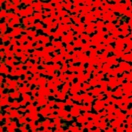 |
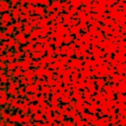 |
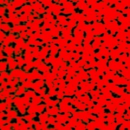 |
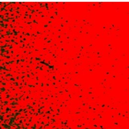 |
| M+Y | 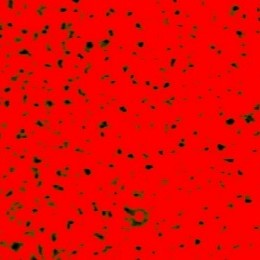 |
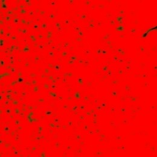 |
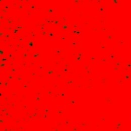 |
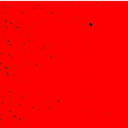 |
| C+M | 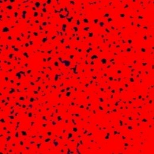 |
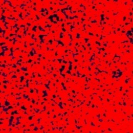 |
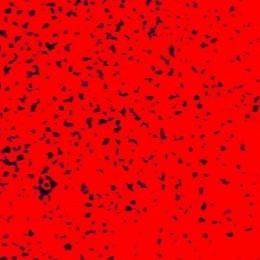 |
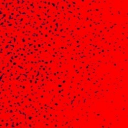 |
| C+M+Y | 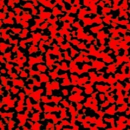 |
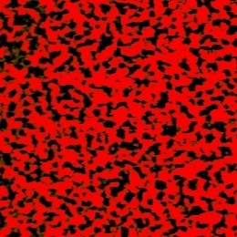 |
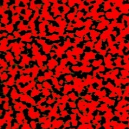 |
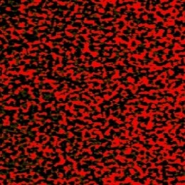 |
Iz tablice 9 u kojoj su prezentirane slike iz kojih se je izvedena slikovna analiza i mjerenje pokrivenosti boje na boju potvrđuju rezultate iz tablice 8 vidljivo je da otisak s UV bojom kod otiskivanja triju boja C+M+Y ostvaruje najmanju pokrivenost površine.
Usporedba rezultata pokrivenosti površine dobivene analizom slika i izračunatih vrijednosti primanja boje na boju korištenjem sve tri spomenute metode prikazana je Slikama 9 – 12.
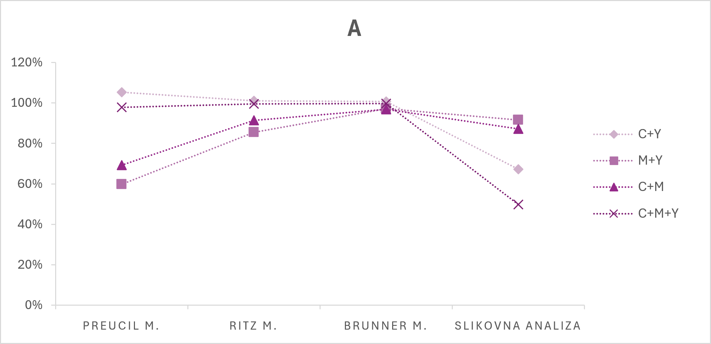
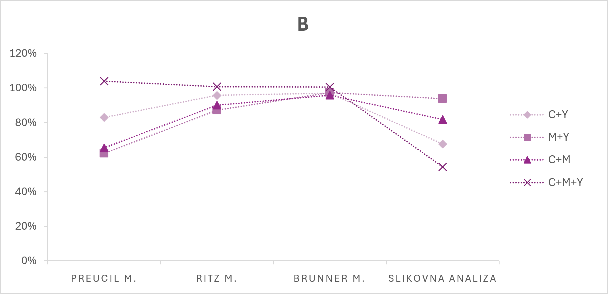
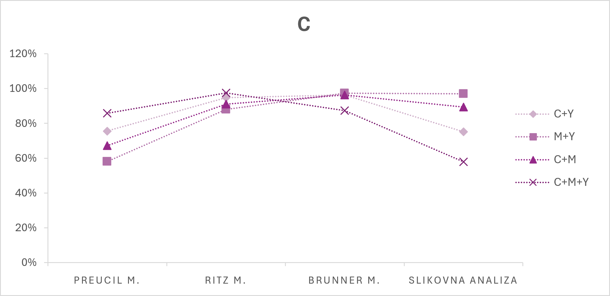
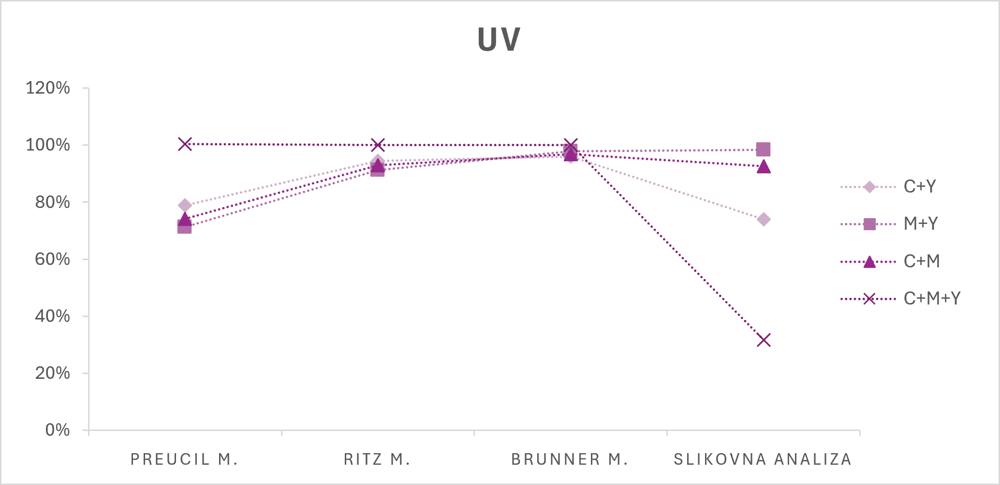
Postotci prekrivene površine zadnjim otisnutim tiskarskom bojom dobiveni analizom slike variraju između 49,82% i 96,97% za uzorke otisnute konvencionalnim bojama dok za uzorke otisnute UV tiskarskom bojom vrijednosti variraju između 31,68% i 98,42% (Tablica 8). Rezultati primanja boje na boju izračunati Preucilovom metodom (Slika 9. – 12.) obuhvaćaju relativno slične raspone vrijednosti, kako među mjerenim uzorcima, tako i između dviju vrsta tiskarskih boja, te neke od tih vrijednosti (A i B) prelaze 100%. Za uzorke tiskane konvencionalnim bojama, vrijednosti primanja boje na boju dobivene ovom metodom variraju između 58,06% i 105,36% dok su za uzorke tiskane UV bojama izmjerene vrijednosti bile između 71,31% i 100,45%. Kod konvencionalnih boja, ali kod UV-sušećih boja vrijednosti primanja boje na boju izračunate prema Ritzovoj metodi (Slika 9. – 12.) sadrže manje varijacije od vrijednosti izračunatih Preucilovom metodom, od 85,51% do 100,99%, u slučaju konvencionalnih boja te od 91,22% do 100,09% u slučaju UV otisaka. Dvije od tih vrijednosti prelaze 100% (A i B). Primjena Brunnerove metode rezultirala je najmanjim varijacijama između vrijednosti. Kod konvencionalnih uzoraka vrijednosti prema Brunnerovoj metodi variraju od 95,84% do 100,68%, dok kod UV uzoraka od 95,99% do 100,06%. Analiza primanja boje na boju prema Brunnerovoj, Preucilovoj i Ritzovoj metodi pokazala je da je UV-sušeća tiskarska boja kod smeđeg uzorka (C+M+Y) ostvarila maksimalne vrijednosti prianjanja od 100 %. Međutim, maksimalne vrijednosti primanja boje na boju zabilježene su i kod pojedinih uzoraka otisnutih konvencionalnim tiskarskim bojama. Usporedba rezultata dobivenih primjenom sve tri metode nije pokazala značajne razlike u procjeni primanja boje na boju između konvencionalnih i UV-sušećih tiskarskih boja, što upućuje na to da obje skupine boja mogu ostvariti vrlo učinkovito primanje boje na boju, ovisno o kombinaciji boja i uvjetima tiska. Raspon izmjerenih vrijednosti kod Preucilove metode je veći od raspona izmjerenih vrijednosti kod Ritzove i Brunnerove metode, dok Brunnerova ima najmanji raspon. Usporedba rezultata analize slike i izračunatih vrijednosti primanja boje na boju korištenjem sve tri spomenute metode pokazala je da su rezultati analize slike najsličniji rezultatima dobivenim Preucilovom metodom. Također se dokazuje je osim izračuna primanja boje na boju potrebno izvesti dodatnu analizu kao što je slikovna analiza kako bi se bolje dobio uvid u primanje boje na boju.
Rezultati denzitometrijske analize pokazali su da su Dop vrijednosti konvencionalnih boja u većini slučajeva bile veće od odgovarajućih vrijednosti UV-sušeće boje. Slikovna analiza također je potvrdila da su konvencionalne boje proizvođača A i B ostvarile usporedivu pokrivenost površine bojom, dok je kod proizvođača C zabilježena čak i veća pokrivenost u odnosu na UV-sušeću boju. Analiza primanja boje na boju pokazala je da je UV-sušeća boja kod smeđeg uzorka prema Brunnerovoj, Preucilovoj i Ritzovoj metodi ostvarila prianjanje od 100 %, no jednako visoke, zabilježene su i kod konvencionalnih tiskarskih boja. Također, sve tri metode određivanja primanja boje na boju pokazale su vrlo slične trendove, bez značajnih razlika u procjeni učinkovitosti prijenosa boje na boju između konvencionalnih i UV-sušećih tiskarskih boja, što potvrđuje da je konvencionalnim tiskarskim bojama moguće postići sličnu ili jednaku kvalitetu višebojnih reprodukcije kao kod UV sušećih boja.
Denzitometrijska analiza pokazala je minimalne varijacije Dop vrijednosti između istih uzoraka, dok su nešto veća odstupanja zabilježena između pojedinih kombinacija boja, pri čemu su najmanja i najveća Dop vrijednost ostvarene kod zelenog i crvenog uzorka. Slikovna analiza pokrivenosti površine također je pokazala vrlo ujednačene rezultate, a vrijednosti primanja boje na boju određene Brunnerovom, Preucilovom i Ritzovom metodom nisu pokazale značajne razlike između proizvođača niti između primijenjenih metoda. Dobiveni rezultati upućuju na zaključak da su uočene razlike bile male te nisu značajno utjecale na učinkovitost prijenosa boje na boju što potvrđuje da otisci dobiveni s konvencionalnim bojama omogućuju jednaki prijenos boje na boju.
Usporedbom rezultata slikovne analize i izračunatih vrijednosti primanja boje na boju prema Brunnerovoj, Preucilovoj i Ritzovoj metodi utvrđeno je da su rezultati slikovne analize u najvećoj mjeri odgovarali vrijednostima dobivenim Preucilovom metodom, dok se kod ostalih metoda nisu uvijek uočavali isti trendovi. Kod otiskivanja tona s tri nanesene boje (C+M+Y) najveća pokrivenost površine bojom ostvarena je kod otiska s C bojom (57,90 %), dok je najmanja vrijednost zabilježena kod UV-sušeće boje (31,98 %). Također, najveće razlike u Dop vrijednostima uočene su kod zelenog uzorka, pri čemu je UV-sušeća boja ostvarila najnižu Dop vrijednost (1,06 ± 0,01), dok je najveća Dop vrijednost zabilježena kod crvenog uzorka konvencionalne boje C. Dobiveni rezultati pokazuju da, iako su kvalitativan parametar primanja boje na boju i pokrivenost površine povezani s kvalitetom višebojne reprodukcije, njihova međusobna povezanost nije dovoljno izražena da bi se potvrdila značajna korelacija.
Vrijednosti prekrivene površine zadnjim otisnutim slojem boje kod konvencionalnih otisaka kretale su se od 49,82 % do 96,97 %, dok su kod UV otisaka iznosile od 31,68 % do 98,42 %. Iako je UV-sušeća boja u pojedinim kombinacijama boja ostvarila visoke vrijednosti pokrivenosti površine, kod otiskivanja triju boja (C+M+Y) zabilježena je najmanja pokrivenost površine upravo kod UV otiska (31,98 %), dok je najveća vrijednost ostvarena kod konvencionalne boje C (57,90 %). Kod pojedinih dvobojnih kombinacija UV otisci ostvarili su veću pokrivenost površine, primjerice kod tonova M+Y (98,42 %) i C+M (92,63 %), no rezultati nisu pokazali dosljednu prednost UV-sušeće boje u odnosu na konvencionalne boje. Rezultati ukazuju na to da pokrivenost površine nije izravno određena samo vrstom tiskarske boje, odnosno da otisci nastali s UV-sušećom bojom nužno se sadrže bolju pokrivenosti površine s bojom, već da pokrivenost ovisi i o kombinaciji boja, svojstvima pojedinog sustava boja te uvjetima višebojnog tiska.
5. Digitalna priprema i prijelom diplomskog rada
5.1 Koncept
Koncept digitalnog web prikaza diplomskog rada proizašao je iz iskustva stečenog sudjelovanjem u EPE (fra. Écran, Papier, Éditer) projektu, koje je potaknulo razmišljanje o mogućnostima prezentacije sadržaja diplomskog rada u digitalnom, interaktivnom te u konačnici tiskanom obliku. Diplomski rad predstavlja akademski dokument čija je struktura morala ostati usklađena s pravilima akademskog pisanja, što uključuje zadržavanje strukture i redoslijeda poglavlja, hijerarhije naslova, načina označavanja slika i grafova, akademskog načina citiranja, organizacije teksta te logičnog slijeda čitanja. Polazište izrade ovog digitalnog prijeloma rada stoga nije bilo mijenjanje njegove strukture, već istraživanje mogućnosti prezentacije rada u formi interaktivnog digitalnog medija.
Umjesto izrade diplomskog rada isključivo u programima za prijelom i obradu dokumenata, poput Microsoft Worda ili Adobe InDesigna, odlučeno je razviti njegovu web inačicu. Web prikaz izrađen je korištenjem HTML-a, CSS-a i JavaScripta te je oblikovan tako da zadržava osnovnu strukturu i vizualne karakteristike klasičnog diplomskog rada, ali za razliku od uobičajenog statičnog prikaza dokumenta, web format omogućuje uvođenje interaktivnih i dinamičnih elemenata, poput animacija, promjena sadržaja i različitih interakcija. Iako su Microsoft Word i Adobe InDesign među najčešće korištenim alatima za izradu i prijelom dokumenata, njihovo je korištenje, osobito u slučaju Adobe InDesigna, vezano uz komercijalne licence i pretplate, što ih čini manje dostupnima korisnicima koji nemaju pristup takvom softveru. Upravo je pitanje dostupnosti alata jedno od polazišta EPE projekta, čiji je cilj razvoj otvorenog i svima dostupnog rješenja za izradu i prijelom publikacija. Primjenom otvorenih web tehnologija, poput HTML-a, CSS-a i JavaScripta, moguće je izraditi dokument bez oslanjanja na komercijalni softver, a istovremeno iskoristiti mogućnosti weba za stvaranje interaktivnog i dinamičnog sadržaja.
Cilj nije bio zamijeniti strukturu diplomskog rada strukturom klasične web stranice, već promijeniti način njegove prezentacije i iskustvo čitanja, uz dodavanje mogućnosti interakcije sa sadržajem te izravne pretvorbe web prikaza u PDF i konačnog tiska diplomskog rada. Dodatna prednost ovakvog pristupa je mogućnost povezivanja digitalne i tiskane verzije rada. Web prikaz zadržava mogućnosti interakcije karakteristične za klasične web stranice, dok istovremeno omogućuje paginaciju sadržaja pomoću Paged.js-a i njegov izravan izvoz u PDF format spreman za tisak. Softverska biblioteka Paged.js koristi CSS pravila kako bi HTML dokument prikazan u web pregledniku pravilno paginirala i pripremila za generiranje PDF-a spremnog za tisak. Paged.js omogućuje kontrolu svojstava stranice, uključujući margine, veličinu i orijentaciju dokumenta, kao i automatsko numeriranje stranica te dinamičko prikazivanje zaglavlja i podnožja. Na taj se način ostvaruje izravna povezanost između digitalnog web prikaza i konačnog PDF dokumenta, odnosno tiskane verzije rada. Vrijedno svojstvo ovakvog načina digitalnog prijeloma jest mogućnost automatskog određivanja i numeriranja stranica izvornog sadržaja te generiranja dokumenta prilagođenog za tisak. Iako je u ovom radu prijelom unaprijed definiran pravilima diplomskog rada i konačni dokument već ima određenu strukturu i numeraciju stranica, Paged.js pruža mogućnost primjene istih principa i na druge klasične web stranice. Tako je moguće automatski definirati veličinu i orijentaciju dokumenta, prilagoditi margine te generirati paginirani dokument bez potrebe za ručnim prijelomom svake pojedine stranice. Ovakav način rada omogućuje da se promjene uvedene u web inačicu, bilo na tekstu, slikama ili drugim vizualnim elementima, prilikom generiranja PDF-a zadrže i u konačnom dokumentu. Što otvara prostor za različite mogućnosti kreativnog i vizualnog izražavanja, te se omogućuje veća sloboda u oblikovanju i eksperimentiranju s vizualnom prezentacijom sadržaja, dok web inačica istovremeno pruža prostor za razvoj interaktivnih elemenata koji obogaćuju iskustvo čitanja. Digitalni prikaz tako ne predstavlja samo reprodukciju diplomskog rada u drugom formatu, već njegovu prilagodbu mogućnostima interaktivnog medija.
5.2 Oblikovanje i interaktivni elementi
Oblikovanje rada vođeno je pravilima akademskog pisanja i oblikovanja diplomskog rada, uz nastojanje da se sadržaj organizira na jasan i pregledan način te prilagodi mogućnostima digitalnog prikaza. Vizualna struktura rada definirana je kroz tipografiju, kompoziciju i raspored elemenata te način prikaza fotografija, grafova, tablica i ostalih vizualnih sadržaja. Oblikovanje je provedeno pomoću HTML-a i CSS-a, pri čemu su pojedini elementi dodatno prilagođeni za prikaz u web pregledniku i generiranje konačnog PDF dokumenta pomoću biblioteke Paged.js.
Kompozicija stranice oblikovana je tako da digitalni prikaz vizualno podsjeća na diplomski rad u PDF formatu, pri čemu je zadržana struktura karakteristična za akademski dokument. Web prikaz sadrži sve glavne dijelove diplomskog rada, uključujući naslovnicu, uvod, sadržaj, sažetak, teorijska i eksperimentalna poglavlja, zaključak i literaturu. Za razliku od konačnog PDF-a, sadržaj je u web pregledniku prikazan kao kontinuirana cjelina, bez fizičkih prijeloma stranica. Unatoč tome, širina glavnog sadržajnog područja prilagođena je A4 formatu kako bi što više ličio na konačan dokument. Tekstualni sadržaj raspoređen je u jednom stupcu, dok su fotografije, grafovi, tablice i ostali vizualni elementi postavljeni unutar teksta. Ovakvim načinom oblikovanja omogućeno je da se elementi prilagode dostupnom prostoru bez narušavanja osnovne strukture stranice.
Za oblikovanje osnovnog teksta, naslova, podnaslova i ostalih tekstualnih elemenata korišten je font Times New Roman. Odabir iste tipografske obitelji kroz različite dijelove rada omogućuje vizualnu povezanost sadržaja i približava digitalni prikaz oblikovanju klasičnog akademskog dokumenta. Hijerarhija tekstualnog sadržaja definirana je korištenjem HTML elemenata h1, h2, h3 i p, kojima su pomoću CSS-a određene različite veličine i karakteristike teksta poput debljine i rezovi fonta. Različitim veličinama teksta omogućeno je jasno razlikovanje pojedinih razina sadržaja i lakše snalaženje kroz strukturu rada. Za određivanje razmaka između redaka korišteno je CSS svojstvo line-height, dok je tekst poravnat obostrano pomoću svojstva text-align: justify, kako bi se olakšalo čitanje. Automatsko rastavljanje riječi isključeno je pomoću svojstva hyphens: none, čime se zadržava kontrola nad načinom prijeloma teksta. Razmaci između odlomaka, naslova i ostalih elemenata definirani su pomoću svojstva margin, dok se padding koristi za određivanje unutarnjeg prostora kod pojedinih elemenata. Na taj način moguće je precizno kontrolirati količinu praznog prostora između sadržajnih cjelina i postići ujednačen ritam kroz cijeli dokument. Za naglašavanje pojedinih dijelova teksta i ključnih riječi korišten je tipografski stil italic. Kurziv je definiran CSS svojstvom font-style: italic, dok su za pojedine elemente korišteni i odgovarajući HTML elementi. Fotografije i ostali vizualni sadržaji organizirani su pomoću HTML elemenata figure, img i figcaption. Element figure omogućuje grupiranje fotografije i pripadajućeg opisa, dok se pomoću figcaption definira opis vizualnog sadržaja. Veličina fotografija prilagođena je dostupnom prostoru pomoću svojstava max-width i max-height, dok height: auto omogućuje zadržavanje izvornog omjera fotografije prilikom promjene veličine. Opisi fotografija oblikovani su manjom veličinom fonta od osnovnog teksta te su prikazani kurzivom i sivom bojom. Postavljeni su ispod fotografija i centrirani u odnosu na vizualni element. Za fotografije i grafičke elemente definirana su i pravila koja sprječavaju njihovo neželjeno razdvajanje između stranica prilikom generiranja PDF-a. Tablice su definirane pomoću HTML elemenata table, th i td, dok se za njihovo oblikovanje koriste CSS svojstva poput border-collapse, border, padding i vertical-align. Zaglavlja tablica dodatno su vizualno istaknuta promjenom boje pozadine, debljine fonta i poravnanja teksta. Naslovi tablica definirani su pomoću elementa caption te su oblikovani manjom veličinom fonta i kurzivom. Za tablice je, kao i za fotografije, definirano svojstvo break-inside: avoid, čime se smanjuje mogućnost njihovog neželjenog razdvajanja između dvije stranice PDF dokumenta.
Budući da je rad oblikovan kao HTML dokument, izgled konačnog PDF-a (Slika 13.) definiran je pomoću CSS pravila prilagođenih za ispis i paginaciju. Za generiranje paginiranog dokumenta korištena je biblioteka Paged.js. Pomoću @page pravila definiran je format stranice A4, kao i njezine margine. U kodu su postavljene margine od 25 mm za gornju i desnu stranu te 35 mm za donju i lijevu stranu.
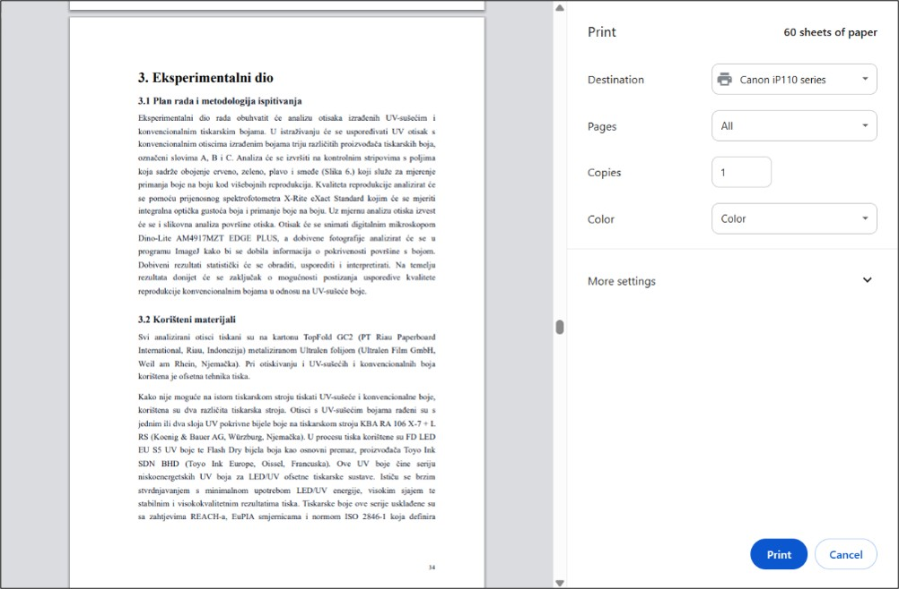
Unutar istog pravila definirani su elementi zaglavlja i podnožja. U donjem desnom dijelu stranice prikazuje se automatski broj stranice pomoću CSS funkcije counter(page). Za oblikovanje prikaza prilikom ispisa koristi se @media print, unutar kojeg su definirana dodatna pravila prilagođena generiranju PDF dokumenta. U tom dijelu uklanjaju se elementi koji su namijenjeni isključivo web prikazu, poput sjene oko pojedinačnih Paged.js stranica, te se pozadina dokumenta postavlja na bijelu. Na taj se način razlikuju pravila namijenjena prikazu dokumenta u web pregledniku od pravila koja se primjenjuju pri njegovom pretvaranju u PDF. Za kontrolu prijeloma sadržaja između stranica korištena su svojstva break-before, break-after i break-inside, uz odgovarajuća svojstva page-break-before, page-break-after i page-break-inside za kompatibilnost s različitim načinima paginacije. Ovakva pravila omogućuju veću kontrolu nad automatskom paginacijom i smanjuju mogućnost pojave neželjenih prijeloma. Na taj način isti HTML dokument služi kao osnova za interaktivni prikaz u web pregledniku i za izradu konačnog PDF dokumenta. HTML određuje strukturu i organizaciju sadržaja, dok CSS definira njegov vizualni izgled, tipografiju, raspored elemenata i ponašanje prilikom paginacije. Paged.js pritom povezuje strukturu HTML dokumenta i pravila CSS-a s konačnim prikazom po stranicama. Takav način izrade omogućuje da se promjene u strukturi ili oblikovanju mogu provoditi na jednom mjestu, a zatim primijeniti na cijeli dokument, čime se postiže veća dosljednost i olakšava naknadno uređivanje rada.
Interaktivnost je uvedena kao jedan od elemenata koji digitalni prikaz rada razlikuje od njegovog klasičnog statičnog PDF oblika. Za razliku od klasičnog dokumenta, web prikaz omogućuje korisniku izravnu interakciju s pojedinim elementima sadržaja. Interaktivni elementi oblikovani su tako da se aktiviraju određenim postupkom korisnika, prvenstveno prelaskom pokazivača miša preko elementa (eng. hover) i interakcijom s fotografijama. Na taj način pojedini elementi ne ostaju samo vizualno prikazani, već reagiraju na korisnika i mijenjaju svoj izgled ili način prikaza, te zadržavaju svoje stanje nakon interakcije tijekom konačnog formiranja PDF dokumenta, što omogućuje bezbroj edukativnih, ali i kreativnih načina prikaza teme rada. Tehnička izvedba interaktivnosti ostvarena je kombinacijom HTML-a, CSS-a i JavaScripta. HTML elementi definiraju strukturu i sadržaj interaktivnih elemenata, CSS određuje njihov vizualni izgled i animacije, dok JavaScript omogućuje složenije reakcije na korisničke radnje. Na taj način interaktivnost nije odvojena od osnovnog sadržaja rada, već je integrirana u njegovu strukturu i vizualno oblikovanje. Za pohranu izvornog koda i objavu web stranice korišten je GitHub, platforma koja omogućuje pohranu, organizaciju i upravljanje projektnim datotekama. Cjelokupna struktura web stranice, uključujući HTML, CSS, JavaScript i pripadajuće vizualne materijale, postavljena je u GitHub repozitorij. Stranica je putem GitHub Pages usluge objavljena na webu, čime je omogućen njezin pristup i pregled u web pregledniku bez potrebe za lokalnim pokretanjem.
Jedan od načina interakcije ostvaren je pomoću animiranih ilustracija koje se aktiviraju prelaskom pokazivača miša preko njih. U početnom stanju ilustracije su prikazane u osnovnom obliku kao statične ilustracije, dok se nakon prelaska pokazivača aktivira definirana animacija. Promjenom svojstava elementa tijekom eng. hover stanja moguće je kontrolirati njegovu veličinu, položaj, prozirnost ili druge vizualne karakteristike. Animacije su oblikovane tako da budu kratke i nenametljive te da ne ometaju čitanje sadržaja, već korisniku daju dodatnu vizualnu informaciju o elementu s kojim može ostvariti interakciju. Posebno je oblikovana interakcija s tekstom, pri kojoj se sadržaj mijenja povlačenjem pokazivača preko teksta. JavaScript pojedinačne znakove odlomka pretvara u zasebne elemente, čime se omogućuje njihova neovisna promjena. Svaki znak prolazi kroz nekoliko uzastopnih stanja koja predstavljaju CMYK kanale. Početno crno stanje veličine 12 pt (Slika 14.) prvim se prelaskom mijenja u žuto i povećava na 16 pt, zatim u magentu veličine 20 pt, a konačno u cijan veličine 24 pt (Slika 15.).
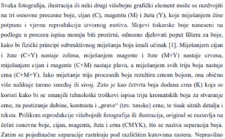
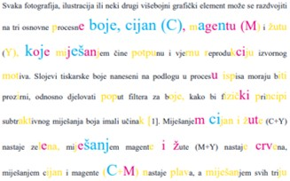
Na taj način promjena boje i veličine teksta vizualizira postupno mijenjanje kanala. Za vrijeme interakcije s tekstom prikazuje se kružni pokazivač koji prati položaj miša i označava područje unutar kojeg se aktivira promjena znakova. Time je interakcija vizualno jasnija, a korisnik dobiva informaciju o području na kojem se promjena trenutno odvija. Na odabranim fotografijama implementirana je interaktivna simulacija CMYK separacije. Iznad fotografije postavljeni su gumbi za odabir pojedinačnih kanala C (cijan), M (magenta), Y (žuta) i K (crna), kao i gumb CMYK kojim se fotografija vraća u početni prikaz. Klikom na pojedini gumb mijenja se izgled fotografije, pri čemu JavaScript odabranom kanalu pridružuje odgovarajuću kombinaciju CSS filtera. Svaki kanal tako dobiva karakterističan koloristički prikaz (Slika 16.), dok se odabirom opcije CMYK uklanjaju primijenjeni filteri i vraća izvorni izgled fotografije. Interakcija omogućuje korisniku da jednostavnim odabirom gumba usporedi pojedinačne kanale s izvornom fotografijom te lakše razumije njihov odnos u procesu reprodukcije slike. Ovdje se ne radi o stvarnoj separaciji CMYK kanala, već o vizualnoj simulaciji ostvarenom primjenom različitih filtera u boji. Filteri fotografiju obojaju u jednu od procesnih boja, čime se simulira izgled pojedinačnog CMYK kanala. Ovaj element nema funkciju stvarne separacije slike, već služi kao interaktivni vizualni prikaz povezan s teorijskim sadržajem rada o CMYK sustavu.
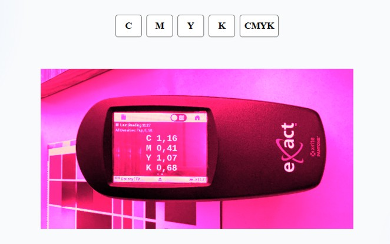
Interaktivni elementi međusobno se razlikuju prema načinu aktiviranja i vrsti vizualne promjene. Animirane ilustracije reagiraju na prelazak pokazivača, tekst mijenja veličinu i boju, dok fotografije omogućuju izravnu manipulaciju prikazom CMYK kanala. Zajedničko im je da se promjena događa kao neposredna reakcija na korisnikovu radnju, bez potrebe za učitavanjem nove stranice ili dodatnog sadržaja. Interaktivnost tako omogućuje da korisnik sadržaj ne promatra samo kao statičan dokument, već da pojedine njegove dijelove istražuje vlastitim pokretima i reakcijama. Web prikaz time dobiva dodatnu razinu funkcionalnosti u odnosu na konačni PDF, u kojem su isti elementi prikazani statično. Mogućnosti ovakvog načina prikaza diplomskog ili bilo kojeg drugog rada su gotovo beskonačne. Web prikaz omogućuje primjenu različitih kreativnih, ali i edukativnih načina prezentacije elemenata rada, čime se tema može dodatno približiti čitatelju. Za razliku od statičnog dokumenta, dinamičan prikaz omogućuje aktivnije sudjelovanje korisnika, privlači i zadržava njegovu pažnju te otvara prostor za različite mogućnosti eksperimentiranja s dizajnom i načinima prezentacije sadržaja. Istovremeno, Web-to-Print pristup koji omogućuje Paged.js može predstavljati alternativu klasičnim alatima za oblikovanje dokumenata, poput Worda i InDesigna, pružajući pristupačan način izrade različitih vrsta publikacija, poput stručnih radova, brošura ili knjiga
6. Zaključak
Kvaliteta višebojne reprodukcije u velikoj mjeri ovisi o svojstvima tiskarskih boja i njihovom međusobnom ponašanju tijekom tiskovnog procesa. Posebno važan čimbenik predstavlja primanje boje na boju, odnosno sposobnost pojedinog sloja boje da prihvati sljedeći sloj bez narušavanja kvalitete konačnog otiska. Cilj provedenog istraživanja bio je utvrditi postoji li razlika u kvaliteti primanja boje na boju između konvencionalnih i UV-sušećih boja. Rezultati su prikazali da se kvaliteta prianjanja boje na boju značajno ne razlikuje između konvencionalnih i UV-sušećih boja. Vrijednost trappinga kod različitih proizvođača konvencionalnih boja bila je usklađena kroz sve tri primijenjene metode — Brunnerovu, Preucilovu i Ritzovu — dok su se rezultati Preucilove metode najviše podudarali s provedenom slikovnom analizom. Usporedba rezultata dobivenih primjenom sve tri metode nije pokazala značajne razlike u procjeni trappinga između konvencionalnih i UV-sušećih tiskarskih boja, što upućuje na to da obje skupine boja mogu ostvariti vrlo učinkovito primanje boje na boju, ovisno o kombinaciji boja i uvjetima tiska. Rezultati slikovne analize između UV-sušećih i konvencionalnih boja nisu se značajno razlikovali, s iznimkom crnog otiska UV bojom (C+M+Y) koji je ostvario najmanju pokrivenost površine, što je potvrđeno fotografijama snimljenim digitalnim mikroskopom i obrađenim u ImageJ programu. Hipoteza H1 je potvrđena jer su sustavi konvencionalnih tiskarskih boja ostvarili vrijednosti ink trappinga i kvalitetu višebojne reprodukcije usporedive s UV-sušećim bojama, dok se hipoteza H2 može smatrati potvrđenom jer rezultati nisu pokazali značajne razlike u prijenosu boje na boju između otisaka dobivenih isključivo konvencionalnim tiskarskim bojama. Hipoteza H3 nije potvrđena jer rezultati nisu pokazali jednoznačnu korelaciju između ink trappinga kao kvalitativnog parametra primanja boje na boju i pokrivenosti površine bojom. Naposljetku, hipoteza H4 nije potvrđena jer rezultati slikovne analize nisu pokazali da otisci nastali UV-sušećom bojom u svim slučajevima ostvaruju veću pokrivenost površine bojom u odnosu na konvencionalne tiskarske boje. Rezultati upućuju na to da odabir sustava — konvencionalnih ili UV-sušećih boja — za višebojnu reprodukciju ovisi o ostalim svojstvima poput cijene, ekološke osviještenosti, načina i brzine sušenja, iz razloga što nije pronađena značajna razlika u kvaliteti reprodukcije na kojoj bi se temeljio prevladavajući odabir između ovih vrsta tiskarskih boja. Dobiveni rezultati potvrđuju da se odgovarajućim odabirom konvencionalnih tiskarskih boja može postići kvaliteta višebojne reprodukcije usporediva s onom ostvarenom primjenom UV-sušećih boja.
7. Literatura
- Kiphhan, H. (2001). Handbook of Print Media. Berlin: Springer. Dostupno na: books.google.hr [11. 8. 2026.]
- Aydemir, C., & Özsoy, S. A. (2020). Environmental impact of printing inks and printing process. Journal of Graphic Engineering and Design, 11(2), 51–63. Dostupno na: jged.uns.ac.rs [11. 8. 2026.]
- Assis, R., Conesa, C., Pedoni, E., & Lalevée, J. (2025). New developments and inkjet applications of UV-LED curable inks. Dostupno na: sciencedirect.com [21. 5. 2026.]
- Leach, R. H., & Pierce, R. J. (Eds.). (2008). The Printing Ink Manual (5th ed.). Dordrecht: Springer.
- Glöckner, P., Jung, T., Struck, S., & Studer, K. (2008). Radiation Curing: Coatings and Printing Inks. Germany: Vincentz Network GmbH & Co.
- Encyclopaedia Britannica. (n.d.). Color printing. Dostupno na: britannica.com [2. 8. 2026.]
- Nguyen, H. T. K., & Van Huy, P. (2022). A Study of the Ink Trapping in Lithographic Printing. International Journal of Scientific Research in Science and Technology (IJSRST), 9(4), 16–20. Dostupno na: doi.org/10.32628/ijsrst2293161 [16. 7. 2026.]
- Poljak Gaži, J., Majnarić, I., Zjakić, I., & Bates, I. (2026). Influence of printing substrate characteristics on ink trapping behavior. Innovations in Publishing, Printing and Multimedia Technologies, 2(1). Dostupno na: doi.org/10.59476/ilpmt2026.v2i1.789 [16. 7. 2026.]
- Nguyen, H. T. K. (2024). Ink sequence effects on color gamut in multicolor lithographic printing. International Journal of Scientific Research in Science and Technology, 11(3), 602–606. Dostupno na: researchgate.net [16. 7. 2026.]
- Cunin, D. (2024). Écran-papier-éditer: Web-to-print technologies. U Proceedings of the Blaž Baromić International Conference on Printing, Design and Graphic Communications (str. 8–20). Faculty of Graphic Arts, University of Zagreb. Dostupno na: epe.esad-gv.fr [6. 7. 2026.]
- Paged.js — dokumentacija. Dostupno na: pagedjs.org [6. 7. 2026.]
- W3Schools. Responsive Web Design – Media Queries. Dostupno na: w3schools.com [6. 7. 2026.]
- World Wide Web Consortium (W3C). (2023). CSS Paged Media Module Level 3 (Working Draft). Dostupno na: w3.org [6. 7. 2026.]
- Mozilla Developer Network. Polyfill. MDN Web Docs. Dostupno na: developer.mozilla.org [6. 7. 2026.]
- Flint Group. (2016). Novaplast® BIO — The series for foil and other non-absorbent substrates. Dostupno na: asg-grafic.com [23. 6. 2026.]
- Huber group. (2024). Technical Information 16.P.039 — MGA® LABEL 2100. Dostupno na: hubergroup.com [23. 6. 2026.]
- SunTec® V-Foil (2023). Technical Data Sheet (engleska verzija).
- Toyo Ink Europe. (2020). Technical Information — FlashDry® LED S5 series. Dostupno na: toyoink-europe.com [23. 6. 2026.]
- X-Rite. (2018). eXact Standard — brošura. Dostupno na: xrite.com [7. 7. 2026.]
- X-Rite. eXact / eXact Xp: eXact family model comparison — brošura. Dostupno na: xrite.com [7. 7. 2026.]
- Dino-Lite Digital Microscope — AM4917MZT. Dostupno na: dino-lite.hr [9. 6. 2026.]
- Preucil, F. (1953). Color hue and ink transfer — their relation to perfect reproduction. U TAGA Proceedings (str. 102–110).
- Ritz, A. (1996). A halftone treatment for obtaining multi-colour ink film trapping values. Professional Printer, 40(5), 11–17.
- ImageJ Wiki. Dostupno na: imagej.net [10. 6. 2026.]
Popis tablica
- Tablica 1. Korištene oznake za analizirane otiske
- Tablica 2. Specifikacije uređaja X-Rite eXact Standard [20]
- Tablica 3. Specifikacije digitalnog mikroskopa Dino-Lite AM4917MZT EDGE PLUS [21]
- Tablica 4. Spektrofotometrijske vrijednosti optičke gustoće za zelenu boju
- Tablica 5. Spektrofotometrijske vrijednosti optičke gustoće za crvenu boju
- Tablica 6. Spektrofotometrijske vrijednosti optičke gustoće za plavu boju
- Tablica 7. Spektrofotometrijske vrijednosti optičke gustoće za crnu boju
- Tablica 8. Postotak prekrivene površine zadnje otisnute boje dobiven analizom slike
- Tablica 9. Analiza slike konvencionalnih i UV otisaka s tresholdom
Popis slika
- Slika 1. Dijagram sastava konvencionalnih tiskarskih boja (Izvor: autorska ilustracija)
- Slika 2. Shematski prikaz procesa UV očvršćivanja tiskarske boje [1]
- Slika 3. Subtraktivno miješanje procesnih boja CMYK (Izvor: printingcenterusa/)
- Slika 4. Shematski prikaz preklapanja dviju tiskarskih boja na tiskovnoj podlozi (Izvor: repository.rit.edu/)
- Slika 5. Shematski prikaz procesa web-to-print tehnologije od web-preglednika do izlaznih formata za digitalni prikaz i tisak [10]
- Slika 6. Kontrolni strip s punim poljima koji služe za mjerenje primanje boje na boju kod višebojnih reprodukcija (Izvor: autorska fotografija)
- Slika 7. Prijenosni spektrofotometar X-Rite eXact Standard (Izvor: autorska fotografija)
- Slika 8. Dino-Lite AM4917MZT digitalni mikroskop
- Slika 9. Usporedba srednjih vrijednosti primanja boje na boju za konvencionalnu tiskarsku boju A
- Slika 10. Usporedba srednjih vrijednosti primanja boje na boju za konvencionalnu tiskarsku boju B
- Slika 11. Usporedba srednjih vrijednosti primanja boje na boju za konvencionalnu tiskarsku boju C
- Slika 12. Usporedba srednjih vrijednosti primanja boje na boju za UV-sušeću boju
- Slika 13. Prikaz izgleda stranice konačnog PDF dokumenta (Izvor: autorska fotografija)
- Slika 14. Prikaz teksta prije interakcije (Izvor: autorska fotografija)
- Slika 15. Prikaz teksta poslje interakcije (Izvor: autorska fotografija)
- Slika 16. Prikaz fotografije s aktivnim M (magenta) kanalom (Izvor: autorska fotografija)